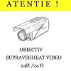
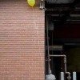
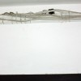

<!DOCTYPE html PUBLIC "-//W3C//DTD XHTML 1.0 Strict//EN" "http://www.w3.org/TR/xhtml1/DTD/xhtml1-strict.dtd">
<html xmlns="http://www.w3.org/1999/xhtml" dir="ltr" lang="en-US">
<head profile="http://gmpg.org/xfn/11">
<meta http-equiv="Content-Type" content="text/html; charset=UTF-8" />
<title>Big Brother îţi goleşte apartamentul » ACRU.ro</title>
<meta name="robots" content="noodp, noydir" />
<meta name="description" content="Camerele video în holul blocului și în alte spații comune sunt ultima găselniță a locatarilor cu veleități de securist, care, spre amurgul vieții, ajung să conducă ceva: asociația de proprietari. Sistemele de supraveghere și înregistrare video instalate în acest mod" />
<meta name="keywords" content="monitorizare, video, bloc, proprietari, lege, supraveghere, hol, scări, pază" />
<link rel="stylesheet" href="../wp-content/themes/thesis_185/custom/layout.css" type="text/css" media="screen, projection" />
<!--[if lte IE 8]><link rel="stylesheet" href="https://acru.ro/wp-content/themes/thesis_185/lib/css/ie.css" type="text/css" media="screen, projection" /><![endif]-->
<link rel="stylesheet" href="../wp-content/themes/thesis_185/custom/custom.css" type="text/css" media="screen, projection" />
<link rel="shortcut icon" href="../wp-content/uploads/2022/03/favicon.ico" />
<link rel="canonical" href="index.html" />
<link rel="alternate" type="application/rss+xml" title="ACRU.ro RSS Feed" href="../feed/index.html" />
<link rel="pingback" href="https://acru.ro/xmlrpc.php" />
<link rel="EditURI" type="application/rsd+xml" title="RSD" href="https://acru.ro/xmlrpc.php?rsd" />
<meta http-equiv="content-language" content="ro" />
<meta name="copyright" content="© ACRU.ro" />
<div id="fb-root"></div>
<script async defer crossorigin="anonymous" src="https://connect.facebook.net/en_US/sdk.js#xfbml=1&version=v21.0"></script>
<link rel="alternate" type="application/rss+xml" title="ACRU.ro &raquo; Ochii din hol știu tot și o să spună Comments Feed" href="feed/index.html" />
	<link rel="stylesheet" href="../wp-content/plugins/shutter-reloaded-plus/shutter-reloaded.css" type="text/css" media="screen" />
	<style type='text/css'>
div#shNavBar {background-color:#e6dbb0;}
div#shNavBar {color:#000000;}
div#shShutter{background-color:#111111;opacity:0.94;filter:alpha(opacity=94);}
div#shDisplay div#shTitle {color:#e0fb22;}
</style>
	<script src="../wp-content/plugins/shutter-reloaded-plus/shutter-reloaded.js" type="text/javascript"></script>
	<script type="text/javascript">
	var shutterSettings = {"imgDir":"https:\/\/acru.ro\/wp-content\/plugins\/shutter-reloaded-plus\/\/menu\/","imageCount":true,"FS":false,"textBtns":false,"oneSet":true};
	try{shutterAddLoad( function(){shutterReloaded.init('sh');} );}catch(e){}	</script>
	

<!-- Facebook Like Thumbnail (v0.4) -->
<meta property="og:image" content="https://acru.ro/wp-content/uploads/2012/02/obiectiv-supravegheat-video-bloc.png" />
<!-- using featured thumbnail -->
<!-- Facebook Like Thumbnail (By Ashfame - https://github.com/ashfame/facebook-like-thumbnail) -->

</head>
<body class="custom">
<div id="container">
<div id="page">
<ul class="menu">
<li class="tab tab-home"><a href="../index.html" rel="nofollow">Hai Acasă</a></li>
<li class="tab tab-1"><a href="../despre/index.html" title="Despre ACRU">Despre</a></li>
<li class="tab tab-2"><a href="../seriale/index.html" title="Seriale » Acru cu premeditare">Seriale</a></li>
<li class="tab tab-3"><a href="../trafic/index.html" title="Analize şi statistici ">Evaluări</a></li>
<li class="tab tab-4"><a href="../politica-cookies/index.html" title="Politica privind fișierele de tip „cookie”">GDPR</a></li>
<li class="tab tab-5"><a href="../contact/index.html" title="Contact">Contact</a></li>
</ul>
	<div id="header">
<script async src="https://pagead2.googlesyndication.com/pagead/js/adsbygoogle.js?client=ca-pub-8625296282532852"
     crossorigin="anonymous"></script>		<p id="logo"><a href="../index.html">ACRU.ro</a></p>
		<p id="tagline">Adevăruri Crude Rostite cu Umor</p>
	</div>
	<div id="content_box">
		<div id="content" class="hfeed">

					<div class="prev_next post_nav">
						<p class="previous">« <a href="../jurnalism-funebru/index.html" rel="prev">A murit îndrăgitul. Să-l fugărim</a></p>
						<p>» <a href="../urasc-iarna/index.html" rel="next">10 motive să urăşti iarna</a></p>
					</div>
			<div class="post-3207 post type-post status-publish format-standard hentry category-acru category-sacru tag-banii tag-bucuresti tag-idioti tag-util post_box top" id="post-3207">
				<div class="headline_area">
<div class="my-bubble"><span>
<a title="Comentarii la Ochii din hol știu tot și o să spună" rel="nofollow"
href="index.html#comments">
64</a></span></div>					<h1 class="entry-title">Ochii din hol știu tot și o să spună</h1>
  <p class="headline_meta"><abbr class="published" title="2012-02-01 ">1 Februarie 2012 </abbr> </p>
				</div>
				<div class="format_text entry-content">
<p><strong>Camerele video</strong> în <strong>holul blocului</strong> și în alte <em>spații comune</em> sunt ultima găselniță a locatarilor cu veleități de securist, care, spre amurgul vieții, ajung să conducă ceva: <strong>asociația de proprietari</strong>. <em>Sistemele de supraveghere</em> și înregistrare <em>video</em> instalate în acest mod sunt adesea nu doar <strong><a title="Legislație camere video bloc și alte spații comune " href="../camere-supraveghere-legi/index.html">ilegale</a></strong>, ci și absolut <strong>inutile</strong>. De multe ori, printr-un efect pervers, existența camerelor e <strong>periculoasă</strong>. Nu-ți mai fură nimeni ziarul de la cutie, în schimb găsești casa goală la întoarcerea din concediu sau devii o <strong>țintă</strong> aproape sigură pentru înșelătoria prin &#8220;<a title="EVZ: Metoda Accidentul infractorii sună pe telefonul fix "href="http://www.evz.ro/un-copil-din-braila-inselat-prin-metoda-accidentul-a-dat-toate-economiile-familiei-unor-escroci.html" target="_blank">metoda Accidentul</a>&#8220;, pentru că escrocii știu exact când anume să sune la tine acasă.</p>
<p><a class="shutterset_3207" href="../wp-content/uploads/2012/02/atentie-am-ce-pazi.jpg"></a>Legile <em>333/2003</em> și <em>677/2001</em> îl obligă pe <em>Big Brother</em> să stea numai în locuri vizibile și să-și anunțe prezența printr-un afiș de tip “<em>acest obiectiv este supravegheat video</em>”. Mai mult, legiuitorul s-a gândit la eventualitatea că infractorii ar fi analfabeți, respectivul anunț fiind musai însoțit de o <strong>pictogramă</strong> reprezentativă. Pe sistemul “dacă nu știi să citești, cască ochii la poză, <em>ete</em> o cameră video”. Uneori, pe lângă camerele instalate la vedere, își fac loc, discret și eficace, mici echipamente de spionaj. Cum se face filajul modern, vom explica mai târziu.</p>
<h3>Spărgătorul cu șapcă</h3>
<p>Așadar, chiar și cel mai retardat hoț știe că acolo sunt camere de supraveghere. Ce face „spărgătorul” dacă e puțin mai inteligent decât un babuin și nu vrea să aplice trucurile <a class="shutterset_3207" title="Cum păcălești camera video" href="../wp-content/uploads/2012/02/camera-video-fentat.jpg">cu balonul</a> ori umbrela deschisă? Își trage cozorocul șepcii peste ochi și intră cu pas vioi. Urcă și își face treaba. Camerele video panoramice vor înregistra o șapcă <em>Fubu</em> țopăind  prin hol la ora X. O informație cum nu se poate mai <em>prețioasă</em> pentru vajnicii polițiști români, nu-i așa? Oamenii legii vor putea exclude din cercul suspecților <strong>toți cetățenii fără șapcă</strong>, ca în bancul cu iepurele și cangurul.</p>
<h3>Tâlharul idiot</h3>
<p>Să luăm alt scenariu. Un tâlhar idiot care atacă în holul blocului, unde poate fi oricând surprins de locatarii care coboară, în loc să „dea în cap” cu câțiva metri înainte, în spațiu deschis, unde hoțomanul vede perfect dacă se apropie cineva sau nu. Tâlharul imbecil intră, îți dă un pumn și-ți scoate doi dinți. Apoi fuge cu prada: lănțișorul, poșeta sau servieta ta. Da, ai <strong>imagini cu tine luând bătaie</strong>. O să-ți crească dinții la loc când te uiți la filmul jafului? O să doară maxilarul mai puțin? Nu, nici măcar o reducere la stomatolog nu poți obține cu imaginile respective.</p>
<p>Poliția <strong>nu are o bază de date</strong> cu fețele tuturor românilor cu gânduri necurate. Și chiar dacă ar avea, când un sistem de monitorizare video surprinde imagini în mișcare accelerată, filmul e <strong>neclar</strong>. În plus, jurisprudența românească <strong>nu admite ca probă în instanță</strong> imaginile respective, în majoritatea cazurilor. Așadar, nici măcar de niște daune interese pentru dințișori nu-ți iese.</p>
<h3>Psihologia actului infracțional</h3>
<div id="attachment_3215" class="wp-caption alignright" style="width: 110px"><a class="shutterset_3207" href="../wp-content/uploads/2012/02/camera-video-fentat.jpg"></a><p class="wp-caption-text">Eficiente, nu?</p></div>
<p>Spărgătorii de locuințe acționează la <em><strong>pont</strong></em>. Nu „atacă” decât atunci când au indicii că merită să riște. Dacă observă un afiș pe care scrie „<strong><em>acest bloc e <a class="shutterset_3207" title="Video scară bloc " href="../wp-content/uploads/2012/02/obiectiv-supravegheat-video-bloc.png">supravegheat video</a></em></strong>”, ei citesc „<span style="text-decoration: underline;"><strong>în acest bloc locatarii au ce păzi</strong></span>”. Brusc, o locație ca oricare alta devine <strong>interesantă</strong> din punct de vedere<strong> infracțional</strong>.</p>
<p>Existența monitorizării video pe hol sau scară nu e un impediment pentru infractor, ci un pont. E ca și când ai căra pe stradă o servietă pe care scrie, cu litere de-o șchioapă,„această geantă e asigurată cu cifru”.</p>
<h3>Cui folosesc camerele video</h3>
<div id="attachment_4215" class="wp-caption alignleft" style="width: 110px"><a class="shutterset_3207" href="../wp-content/uploads/2012/02/obiectiv-supravegheat-video-bloc.png"></a><p class="wp-caption-text">Obiectiv</p></div>
<p>Imaginile înregistrate de camerele video amplasate în holul blocurilor sunt accesibile practic <strong>oricărui proprietar</strong> dorește să le vadă. Dreptul de acces la imagini e stipulat de <em>Legea 677/2001</em>. Așadar, dacă ți-ai adus amantul/amanta acasă când jumătatea oficială era plecată în delegație, caută-ți un avocat pentru <strong>divorț</strong>.</p>
<p>I-ai spus administratorului condominiului că n-ai bani luna asta pentru întreținere? Stai liniștit, <strong>știe</strong> exact când ai cărat plasma cea nouă. De fapt, <em>comitetul</em> blocului <strong>știe totul</strong> despre tine: la ce oră pleci, la ce oră vii, câte cumpărături faci, la ce ziar ești abonat, câte plicuri îți lasă poștașul, cum te-ai îmbrăcat luni, când te-ai tuns, dacă ai sau nu măturică și făraș când ieși cu câinele la plimbare, câtă bere bei acasă, cât a stat la tine blonda sau colegul drăguț. <em>Banca de date</em> despre tine poate fi <a class="shutterset_3207" title="Pățania unui locatar filmat zilnic" href="../wp-content/uploads/2012/08/camera-video-bloc-ilegal.png">folosită fix așa</a>.</p>
<h3>Pleci în concediu? Aruncă valizele pe fereastră!</h3>
<div id="attachment_3218" class="wp-caption alignleft" style="width: 110px"><a class="shutterset_3207" href="../wp-content/uploads/2012/02/Marian-Ivan-patron-firma-paza.jpg"></a><p class="wp-caption-text">Marian Ivan, fost patron firmă de pază</p></div>
<p>Înregistrările sistemului de supraveghere video sunt disponibile prin Internet inclusiv <strong style="font-style: italic;">angajaților firmei de securitate</strong><strong>,</strong> <em><strong>pază </strong></em>și<em><strong> alarmare</strong></em> care le-a montat. Multe dintre aceste societăți sunt un paravan perfect pentru activități de <strong>crimă organizată</strong>. Nu vorbim despre tâlhari tolomaci, ci despre <em>băieți răi</em> cu ștate vechi. Iată <strong><a title="Cine îți păzește casa?" href="https://evz.ro/bodyguarzii-infractori-sub-acoperire-810069.html">cine știe exact când ai plecat</a></strong> în vacanță și între ce ore pleci la serviciu. Renumitul &#8220;clan al sportivilor&#8221; e constituit pe scheletul unei grupări de bodyguarzi. Elias Bucurică, liderul galeriei Dinamo, reprezintă firma care asigură paza în sectorul 2 al Capitalei. <a title="FOTO Elyass Bucurică Onțanu Dinamo" href="https://a1.ro/galerie/elias-bucurica-regele-pietii-obor-id133786-play51705.html">Nenea ăsta</a> lucrează pentru o firmă plătită de contribuabili să asigure paza obiectivelor, bunurilor, valorilor și protecția persoanelor. Patroni ai firmelor de pază și alarmare sunt arestați pentru spălare de bani și evaziune fiscală. Firme fantomă deținute <em>pe hârtie</em> de oameni ai străzii angajează <a href="https://romanialibera.ro/actualitate/eveniment/oameni-ai-strazii--folositi-pentru-infractiuni-de-shelter-security-351529" title="Cazul Shelter Security" target="_blank">consumatori de droguri</a> pentru monitorizarea bunurilor și persoanelor. Cam acesta e nivelul de reglementare și control în domeniu. </p>
<blockquote><p>„Anumite personaje rău famate își fac firmă de pază și alarmare pentru a-și putea <strong>regla conturile</strong>. Pentru că în mod normal nimeni nu le-ar da aviz de funcționare, <strong>interlopii</strong> caută persoane bine văzute în societate, eventual cu influență, pe care, contra unor sume mari de bani, le trec drept administratorii firmei. Au învățat cum să înșele legea și să-și facă companie de securitate“ &#8211; vicepreședintele Patronatului Agențiilor de Pază (<a href="https://evz.ro/bodyguarzii-infractori-sub-acoperire-810069.html" title="EVZ: Firme securitate " target="_blank">sursa</a>)</p></blockquote>
<p>Seduse de oportunitatea unui chilipir, unele asociații de proprietari care montează sisteme video la bloc aleg <em><strong>cea mai ieftină ofertă</strong></em> de pe piață. Există un motiv destul de simplu pentru care prețul e convenabil. La ceva timp după instalarea sistemului de alarmare, un <strong>locatar înstărit</strong> primește vizita unor hoți. Camerele video fie erau <em>temporar indisponibile</em>, fie au înregistrat niște <em>siluete cu șapcă</em>. Ghinion. Schema se va repeta peste un timp, de fiecare dată victime fiind <em>familiile chivernisite </em>care lipsesc temporar din localitate, sau sunt la serviciu. Poliția va da din umeri neputincioasă. Partea <em>simpatică</em> e că în tot acest timp firma de &#8220;securitate și alarmare&#8221; care gestionează sistemul video ia bani în continuare de la proprietarii „păziți”. Contractul cu Administrația Asociației <strong>nu garantează</strong> împiedicarea infracțiunilor, ci doar instalarea, întreținerea și monitorizarea video pasivă.</p>
<h3>Arhiva înregistrărilor, un <em>paznic</em> cu memorie perfectă</h3>
<p>Dacă niște amărâți de paznici, care se bazează doar pe ce văd și rețin ei, oferă informații atât de precise și de complexe despre locatarii blocurilor, imaginează-ți ce valoare au pentru răufăcători arhivele zilnice ale camerelor de supraveghere!</p>
<div style="position: relative; padding-bottom: 56.25%; height: 0; overflow: hidden; max-width:100%;"><iframe style="position: absolute; top: 0; left: 0; width: 100%; height: 100%;" webkitAllowFullScreen mozallowfullscreen allowfullscreen width="640" height="360" frameborder="0" allow="autoplay" src="https://stirileprotv.ro/lbin/video_embed.php?site=40&#038;media_id=61562541"></iframe></div>
<h3>Ponturi în timp real prin camere spion</h3>
<div id="attachment_16340" class="wp-caption alignright" style="width: 110px"><a class="shutterset_3207" href="../wp-content/uploads/2012/02/camera-spion-ascunsa.jpg"></a><p class="wp-caption-text">Cameră filaj</p></div>
<p>Un cititor „pățit” ne-a relatat că <em>lupii</em> angajați să păzească <em>oile</em> naive, adică lucrătorii firmelor de pază de duzină, au învățat să folosească profitabil banca de date personale pe care o administrează. Nu doar ei, ci și spărgătorii mai evoluați obțin <strong>ponturi perfecte</strong> pentru spargeri, cu minim efort. Nu mai e nevoie ca vreun vecin sau paznic guraliv să povestească despre noul tău Smart TV. E suficientă o cameră spion și infractorii îți <strong>filează apartamentul</strong> zi și noapte chiar de deasupra ușii, în liniște. Hoții sau doar <em>admiratorii secreți</em> află și de câte ori mergi să duci gunoiul, nu doar cine și când te vizitează. Dacă se decid că merită să acționeze, riscul de a fi prinși în flagrant e practic nul.</p>
<p>Camerele video spion folosite pentru filajul apartamentelor sunt, de obicei, <strong>ascunse</strong> printre nenumăratele <strong>fire</strong> de telefonie, Internet și cablu TV ale clădirii, în aplică, întrerupător și chiar <a href="http://vimeo.com/79471209" title="VIDEO: Cameră ascunsă de filaj tip bec" target="_blank">în becuri</a>, sau sunt <em>îngropate</em> în canalele ornamentale de plastic (paturi PVC) care protejează cablurile de pe holurile comune. Cam <a class="shutterset_3207" title="Ți se pregătește ceva! " href="../wp-content/uploads/2012/02/camera-ascunsa-ilegal.jpg">așa arată</a>. Din nefericire, simplul fapt că detectezi sistemul spion nu te scutește de griji. </p>
<p>Majoritatea acestor dispozitive înregistrează și sunet! Pentru răufăcători, riscurile sunt minime, întrucât nimeni <strong>nu poate dovedi intenția</strong> cu care au executat filajul domiciliului până în momentul în care deveniți „partea vătămată”. Adică vă găsiți casa răvășită. Moment în care mini-camera fie nu mai există, fie e deconectată, fie e imposibil de stabilit cine și cu ce scop a montat-o acolo. </p>
<h5>Citește și<strong>  <a title="Legislație camere video supraveghere bloc proprietari" href="../camere-supraveghere-legi/index.html">Supraveghere prin monitorizare video, legală sau penală?</a></strong></h5>
<p>&nbsp;</p>
<p>Dreptul la <strong>intimitate</strong> și <strong>viață privată</strong> nu e o fiță occidentală, ci are inclusiv un rol pragmatic. Bunele intenții funcționează ca un bumerang devastator atunci când nu sunt dublate de logică, informare și inteligență. Supravegherea video la domiciliu e ca o cheie. În principiu, poate fi benefică. Depinde doar câți oameni au dublurile și dacă poți avea <strong>încredere deplină</strong> în toți cei cărora le oferi pe tavă <em>cheia informațională</em> care deschide larg ușa datelor despre viața privată a familiei tale.</p>
<p class="post_tags"><strong>Etichete: </strong><a href="../tag/banii/index.html" rel="tag">banii</a>, <a href="../tag/bucuresti/index.html" rel="tag">București</a>, <a href="../tag/idioti/index.html" rel="tag">idioți</a>, <a href="../tag/util/index.html" rel="tag">util</a></p>        <div class="fb-share-button" 
             data-href="https://acru.ro/camere-video-bloc/" 
             data-layout="button">
        </div>
    <div class="fb_like">
		<iframe src="http://www.facebook.com/plugins/like.php?href=https%3A%2F%2Facru.ro%2Fcamere-video-bloc%2F&amp;layout=button_count&amp;show_faces=false&amp;width=99&amp;action=like&amp;colorscheme=light" scrolling="no" frameborder="0" allowTransparency="true" style="border:none; overflow:hidden; width:99px; height:21px;"></iframe>
</div>
<div class="tweet-button">
	<a href="https://twitter.com/share" class="twitter-share-button" data-count="none" data-via="AcruRo">Tweet</a><script type="text/javascript" src="https://platform.twitter.com/widgets.js"></script>
</div><!--end tweet-button-->
<div id="related_posts" class="clear"><h4>Articole similare:</h4><ul><li>
	<a href="../experiment-antena3/index.html" rel="bookmark" title="Ouatu lui Gâdea, experiment reuşit">
			</a>
	<div class="related_content">
		<a href="../experiment-antena3/index.html" rel="bookmark" title="Ouatu lui Gâdea, experiment reuşit">Ouatu lui Gâdea, experiment reuşit</a>
	</div>
</li>
<li>
	<a href="../taran-lamborghini/index.html" rel="bookmark" title="Descoperă țăranul cu Lamborghini">
			</a>
	<div class="related_content">
		<a href="../taran-lamborghini/index.html" rel="bookmark" title="Descoperă țăranul cu Lamborghini">Descoperă țăranul cu Lamborghini</a>
	</div>
</li>
<li>
	<a href="../cancerul-copii-vindecat/index.html" rel="bookmark" title="Descoperit la timp, cancerul la copii poate fi vindecat">
			</a>
	<div class="related_content">
		<a href="../cancerul-copii-vindecat/index.html" rel="bookmark" title="Descoperit la timp, cancerul la copii poate fi vindecat">Descoperit la timp, cancerul la copii poate fi vindecat</a>
	</div>
</li>
<li>
	<a href="../obicei-spaga/index.html" rel="bookmark" title="Cum să ucizi tradiţia?!">
			</a>
	<div class="related_content">
		<a href="../obicei-spaga/index.html" rel="bookmark" title="Cum să ucizi tradiţia?!">Cum să ucizi tradiţia?!</a>
	</div>
</li>
<li>
	<a href="../jos-tiranul/index.html" rel="bookmark" title="Românii şi conducătorii lor (1)">
			</a>
	<div class="related_content">
		<a href="../jos-tiranul/index.html" rel="bookmark" title="Românii şi conducătorii lor (1)">Românii şi conducătorii lor (1)</a>
	</div>
</li>
</ul></div>				</div>
			</div>

			<div id="comments">
				<dl id="comment_list">
					<dt class="comment even thread-even depth-1" id="comment-454">
<span class="avatar"></span>
<span class="comment_num"><a href="index.html#comment-454" title="Permalink to this comment" rel="nofollow">1</a></span>
<span class="comment_author">Izabela Ciocoi</span>
<span class="comment_time">1 Februarie 2012 @ 21:08</span>
					</dt>
					<dd class="comment even thread-even depth-1">
<div class="format_text" id="comment-body-454">
<p>desi e o camera video la cativa metri de intrarea in bloc, noua ne-au furat contoarele de la subsol si tot ce aveam in boxe (cauciucuri, bicicleta copilului, haine de vara, etc).<br />
politia zice ca s-a uitat pe inregistrari. era iarna, hotii erau imbracati gros. e tot ce au vazut. n-au prins pe nimeni si nici nu vor prinde. sunt bani aruncati aiurea, parerea mea.</p>
</div>
					</dd>
					<dt class="comment odd alt thread-odd thread-alt depth-1" id="comment-456">
<span class="avatar"></span>
<span class="comment_num"><a href="index.html#comment-456" title="Permalink to this comment" rel="nofollow">2</a></span>
<span class="comment_author">Ioana</span>
<span class="comment_time">2 Februarie 2012 @ 15:19</span>
					</dt>
					<dd class="comment odd alt thread-odd thread-alt depth-1">
<div class="format_text" id="comment-body-456">
<p>Off topic: &#8220;doamna&#8221; de la asociatia de locatari din blocul meu a fugit cu toti banii de pe intretinere (platiti de locatari, adica)  </p>
<p>In prealabil, la apartamentul meu a pus &#8220;din greseala&#8221; intr-o luna (de vara) 40 de metri cubi de apa calda in plus, peste ce declarasem (si consumasem, pentru ca ca nu&#8230;nu fur apa) eu. </p>
<p>Mi se pare de-a dreptul hilar ca nimeni nu o poate gasi acum&#8230;si ajung on topic: daaaca aveam si noi montate in scara blocului camere din alea care fac filme pentru CC TV, o gaseam de mult pe tanti! Harakiri faceam!  </p>
</div>
					</dd>
					<dt class="comment byuser comment-author-admin bypostauthor even thread-even depth-1" id="comment-457">
<span class="avatar"><a href="../index.html" rel="nofollow"></a></span>
<span class="comment_num"><a href="index.html#comment-457" title="Permalink to this comment" rel="nofollow">3</a></span>
<span class="comment_author"><a href='../index.html' rel='external nofollow' class='url'>Acru</a></span>
<span class="comment_time">2 Februarie 2012 @ 16:15</span>
					</dt>
					<dd class="comment byuser comment-author-admin bypostauthor even thread-even depth-1">
<div class="format_text" id="comment-body-457">
<p>Ioana,<br />
Dacă aveaţi camere video, ar fi fugit cu nişte bani în plus: banii pentru sistemul de monitorizare video.<br />
O găseaţi cu siguranţă cu ajutorul camerelor, <strong>dacă</strong> s-ar fi ascuns într-o <strong>cutie de scrisori</strong>. Altfel, îi vedeaţi <em>spatele</em> plecând. Presupun că ştiţi deja cum arata doamna de la spate, nu?  </p>
</div>
					</dd>
					<dt class="comment odd alt thread-odd thread-alt depth-1" id="comment-458">
<span class="avatar"></span>
<span class="comment_num"><a href="index.html#comment-458" title="Permalink to this comment" rel="nofollow">4</a></span>
<span class="comment_author">Ioana</span>
<span class="comment_time">2 Februarie 2012 @ 16:50</span>
					</dt>
					<dd class="comment odd alt thread-odd thread-alt depth-1">
<div class="format_text" id="comment-body-458">
<p>O stim din toate unghiurile si dupa toate grimasele.<br />
Evide(me)nt ca nu o gaseam cu camerele, cum nu o gasim nici fara ele.</p>
<p>Planul ei a fost elaborat, si ca un sef de asociatie de locatari competent, nu cred ca ar fi tras zambete la camere (pornind de la premisa ca stia de existenta lor :p ). </p>
<p>Revenind acum la &#8220;psihologia actului infractional&#8221; &#8211; &#8220;doamna&#8221; stia cum se face si nu cred ca prezenta unor camere video in bloc ar fi inhibat-o in vreun fel.</p>
</div>
					</dd>
					<dt class="comment even thread-even depth-1" id="comment-468">
<span class="avatar"></span>
<span class="comment_num"><a href="index.html#comment-468" title="Permalink to this comment" rel="nofollow">5</a></span>
<span class="comment_author">Sys</span>
<span class="comment_time">5 Februarie 2012 @ 13:23</span>
					</dt>
					<dd class="comment even thread-even depth-1">
<div class="format_text" id="comment-body-468">
<p>Nu pot sa cred pe ce mai arunca &#8220;blocatarii&#8221; banii. bine ca stau la casa, la bloc m.as fi imbolnavit de nervi!!!</p>
</div>
					</dd>
					<dt class="comment odd alt thread-odd thread-alt depth-1" id="comment-489">
<span class="avatar"></span>
<span class="comment_num"><a href="index.html#comment-489" title="Permalink to this comment" rel="nofollow">6</a></span>
<span class="comment_author">D Anro</span>
<span class="comment_time">7 Februarie 2012 @ 18:41</span>
					</dt>
					<dd class="comment odd alt thread-odd thread-alt depth-1">
<div class="format_text" id="comment-body-489">
<p>Pai asa e suntem romani si hai sa ne dam cu parerea.Lucrez la o companie care se ocupa cu instalarea de sisteme de supraveghere video,printre care si la blocuri si au fost cazuri si cazuri in care s-au spart apartamente,boxe de la subsolul blocului,talharii in scara,vandalizarea holului etc.In unele cazuri s-au recuperat bunurile in unele nu,acum nu va ganditi ca din moment ce  ati pus camere puteti lasa usa deschisa cand plecati de acasa.Anumite avantaje pt a pune camere sunt ca nu mai exista riscul asa de mare a se sparge apartamente etc&#8230; in bloc o parte din hoti/talhari se sperie(camerele sunt puse in diferite unghiuri pt a surprinde toate detaliile),mai sunt anumite persoane care se strang in scara blocului/in fata scarii,fac anumite stricaciuni(geamuri sparte,becuri sparte,mizerie,vandalizarea peretilor etc) sunt vazuti pe cctv si sunt usor de recunoscut,referitor la&#8221;când un sistem de monitorizare video surprinde imagini în mişcare accelerată, filmul e neclar.&#8221; cu scuzele de rigoare trb sa fii ori prea prost ori foarte prost documentat.(inainte sa instalti camere asigurati-va ca,camerele au min 520 linii TV si DVR sa filmeze full D1 adik 25 fps/camera,filmeaza in timp real,imagini fff clare).</p>
</div>
					</dd>
					<dt class="comment byuser comment-author-admin bypostauthor even thread-even depth-1" id="comment-490">
<span class="avatar"><a href="../index.html" rel="nofollow"></a></span>
<span class="comment_num"><a href="index.html#comment-490" title="Permalink to this comment" rel="nofollow">7</a></span>
<span class="comment_author"><a href='../index.html' rel='external nofollow' class='url'>Acru</a></span>
<span class="comment_time">7 Februarie 2012 @ 18:50</span>
					</dt>
					<dd class="comment byuser comment-author-admin bypostauthor even thread-even depth-1">
<div class="format_text" id="comment-body-490">
<p>D Anro, mulţumesc pentru părere. Presupun că sunteţi român.</p>
<p>Eu am o geacă gri cu glugă. E frig rău, deci îmi pun şi o căciulă, plus un fular. Mă îmbrac fix cum v-am spus şi mă duc să desenez, cu vopsea, un falus mare în holul unui bloc dotat cu cameră video de monitorizare, care filmează <em>min 520 linii TV si DVR, full D1 adik 25 fps/camera</em>. Îmi ia fix 10 secunde (cu agitat spray cu tot). </p>
<p>Îmi puteţi explica <strong>concret</strong> cum o să ma împiedice dispozitivul montat de dvs. pe banii locatarilor să-mi duc &#8220;opera&#8221; la bun sfârşit?</p>
</div>
					</dd>
					<dt class="comment odd alt thread-odd thread-alt depth-1" id="comment-491">
<span class="avatar"></span>
<span class="comment_num"><a href="index.html#comment-491" title="Permalink to this comment" rel="nofollow">8</a></span>
<span class="comment_author">D Anro</span>
<span class="comment_time">7 Februarie 2012 @ 19:17</span>
					</dt>
					<dd class="comment odd alt thread-odd thread-alt depth-1">
<div class="format_text" id="comment-body-491">
<p>Pai este exact ce am spus mai sus sunt cazuri si cazuri,eu de fiecare data cand am discutat cu reprezentatii asociatilor de locatari le-a,m prezentat atat avantaje cat si dezavantaje,niciodata nu am mintit nici un client,locatarii iau o decizie dupa  discutie,deci ei decid pe banii lor.In legatura cu firmele de paza sunt de acord cu articolul am uitat sa mentionez mai sus.</p>
<p>Dar daca vreti sa spargeti/vandaliza/talharii un bloc ce ati alege mai repede cel cu sistem de supraveghere sau cel fara?</p>
</div>
					</dd>
					<dt class="comment byuser comment-author-admin bypostauthor even thread-even depth-1" id="comment-492">
<span class="avatar"><a href="../index.html" rel="nofollow"></a></span>
<span class="comment_num"><a href="index.html#comment-492" title="Permalink to this comment" rel="nofollow">9</a></span>
<span class="comment_author"><a href='../index.html' rel='external nofollow' class='url'>Acru</a></span>
<span class="comment_time">7 Februarie 2012 @ 19:25</span>
					</dt>
					<dd class="comment byuser comment-author-admin bypostauthor even thread-even depth-1">
<div class="format_text" id="comment-body-492">
<p>Dacă vreau să vandalizez din pasiune, mi-e indiferent. <strong>Vandalismul nu implică premeditare</strong>, nici evaluarea consecinţelor. E distrugere sălbatică, instinctuală. </p>
<p>Daca vreau să &#8220;sparg&#8221; locuinţe, aleg exact blocul cu sistem de supraveghere. Pentru că înseamnă că locatarii <strong>au ce păzi</strong>. Deci <em>eu, ca hoţ</em>, <strong>am ce fura</strong>! Pentru un recidivist tăbăcit prin &#8220;facultăţi&#8221;, camerele video sunt doar un indiciu al bunăstării combinate cu frica.</p>
</div>
					</dd>
					<dt class="comment odd alt thread-odd thread-alt depth-1" id="comment-493">
<span class="avatar"></span>
<span class="comment_num"><a href="index.html#comment-493" title="Permalink to this comment" rel="nofollow">10</a></span>
<span class="comment_author">D Anro</span>
<span class="comment_time">7 Februarie 2012 @ 19:29</span>
					</dt>
					<dd class="comment odd alt thread-odd thread-alt depth-1">
<div class="format_text" id="comment-body-493">
<p>In cei 5 ani de experienta,chiar pot sustine contrariul in fine toata lumea are dreptul la o opinie,dar cel mai urat este sa-ti dai cu parerea in necunostinta de cauza.</p>
</div>
					</dd>
					<dt class="comment byuser comment-author-admin bypostauthor even thread-even depth-1" id="comment-494">
<span class="avatar"><a href="../index.html" rel="nofollow"></a></span>
<span class="comment_num"><a href="index.html#comment-494" title="Permalink to this comment" rel="nofollow">11</a></span>
<span class="comment_author"><a href='../index.html' rel='external nofollow' class='url'>Acru</a></span>
<span class="comment_time">7 Februarie 2012 @ 19:37</span>
					</dt>
					<dd class="comment byuser comment-author-admin bypostauthor even thread-even depth-1">
<div class="format_text" id="comment-body-494">
<p>Aveţi experienţă în psihologia devianţei/criminologie sau într-o firmă care vinde sisteme video?</p>
<p>În plus, niciunul dintre comentariile dvs. <strong>nu</strong> a fost cenzurat. Fiecare şi-a prezentat argumentele. Cât de <strong>valide</strong> din punct de vedere <strong>logic</strong> sunt ele, vor decide cititorii <a href="../index.html" rel="nofollow">ACRU.ro</a>.</p>
</div>
					</dd>
					<dt class="comment odd alt thread-odd thread-alt depth-1" id="comment-562">
<span class="avatar"></span>
<span class="comment_num"><a href="index.html#comment-562" title="Permalink to this comment" rel="nofollow">12</a></span>
<span class="comment_author">vlad</span>
<span class="comment_time">18 Februarie 2012 @ 16:55</span>
					</dt>
					<dd class="comment odd alt thread-odd thread-alt depth-1">
<div class="format_text" id="comment-body-562">
<p>Stimate domn,</p>
<p>Nu stiu ce v-a inspirat sa scrieti acest articol (probabil experienta in psihologia deviantei/criminologie) insa nu sunt de acord cu cele spuse de Dumneavoastra.<br />
Ma bazez pe urmatoarele argumente:<br />
1. Un sistem de supraveghere montat in scara unui bloc poate servi la incadrarea infractiunii intr-un interval orar, esential de altfel pentru verificarea eventualilor suspecti si a alibiurilor acestora. De asemenea daca ora comiterii actului este cunoscuta se poate intocmi un traseu iar in functie de camerele care inconjoara perimetrul blocului (banci, magazine, farmacii, firme , etc) se poate identifica raufacatorul. &#8211; informatii culege de la organele de politie<br />
2. Sistemele de supraveghere video nu sunt ilegale. Nu stiu pe ce temei legal va bazati cand faceti o asemenea afirmatie fara acoperire.<br />
3. Legat de faptul ca sistemele de camere in scara blocului sunt inutile, in ipoteza in care raufacatorul este mascat sau foloseste &#8220;umbreluta&#8221;, sper ca v-am lamurit ca va inselati pentru ca exista si alte utilitati ale sistemului de supraveghere.<br />
4. Scopul camerelor video este si de a preveni comiterea infractiunilor, iar in majoritatea cazurilor raufacatorii sunt descurajati de sistemele de supraveghere (excludem teribilistii sau fanaticii ).</p>
<p>Va rog sa revizuiti articolul, pentru ca informatiile false nu aduc niciun beneficiu cititorilor. Pentru intrebari va rog sa va adresati IGPR &#8211; Ordine Publica si va vor lamuri.</p>
<p>Nu in ultimul rand. Sunteti chiar hot?</p>
</div>
					</dd>
					<dt class="comment byuser comment-author-admin bypostauthor even thread-even depth-1" id="comment-563">
<span class="avatar"><a href="../index.html" rel="nofollow"></a></span>
<span class="comment_num"><a href="index.html#comment-563" title="Permalink to this comment" rel="nofollow">13</a></span>
<span class="comment_author"><a href='../index.html' rel='external nofollow' class='url'>Acru</a></span>
<span class="comment_time">18 Februarie 2012 @ 17:44</span>
					</dt>
					<dd class="comment byuser comment-author-admin bypostauthor even thread-even depth-1">
<div class="format_text" id="comment-body-563">
<p>@Vlad+ceilalţi comercianţi de sisteme video CCTV cărora le înţelegem frustrarea:</p>
<p>1) Să coborâm în <strong>realitate</strong>. Nu suntem în serialul american <em>CSI-Criminaliştii</em>. Dacă îmi numiţi <em>organul</em> de poliţie care procedează astfel în cazul unui banal furt din apartament, o să mă mut pe raza secţiei de poliţie respective.<br />
În plus, credeţi că hoţii vor pleca <strong>pe jos</strong> şi se vor opri la <strong>cumpărături</strong> imediat după spargere la alimentara din colţ? Sau scot bani de la bancomat înainte să intre prin efracţie, ca să dea o <em>şpagă</em> în caz că sunt surprinşi?<br />
2) <strong>Camerele video în scara si <a href="../camere-supraveghere-legi/index.html" rel="nofollow">holul blocului sunt ilegale</a></strong> în 99% din cazuri. Vă recomand <strong>Noul cod civil</strong> şi pe cel <strong>penal</strong> precum şi legislaţia europeană privind protecţia vieţii private/intime şi prelucrarea datelor personale.<br />
3) Alte utilităţi? Cum ar fi?<br />
4) Da, aşa scrie în <em>prospectele</em> societăţilor care fac bani monitorizare video. Realitatea din teren nu se prea potriveşte cu marketingul. Văd că nu suflaţi o vorbă despre cazul concret în care <strong>imaginile</strong> cu locatari sunt folosite ca <em>pont</em> pentru <strong>spargeri</strong> sau înşelăciuni prin &#8220;<strong><a href="http://www.gandul.info/stiri/trei-persoane-care-pacaleau-parinti-prin-metoda-accidentul-au-fost-prinse-de-politistii-din-bucuresti-10809317" rel="nofollow">metoda Accidentul</a></strong>&#8220;.  </p>
<p>Dacă tot veni vorba despre poliţie, să citim un material direct de pe site-ul Ministerului de Interne (MAI):<br />
<a href="http://depabd.mai.gov.ro/stii_ce_drepturi_ai.pdf" rel="nofollow">http://depabd.mai.gov.ro/stii_ce_drepturi_ai.pdf</a></p>
<blockquote><p>Nu in ultimul rand. Sunteti chiar hot?</p></blockquote>
<p>Doar în timpul liber, după ce termin cu tâlhăriile şi omorurile.  </p>
</div>
					</dd>
					<dt class="comment odd alt thread-odd thread-alt depth-1" id="comment-1027">
<span class="avatar"></span>
<span class="comment_num"><a href="index.html#comment-1027" title="Permalink to this comment" rel="nofollow">14</a></span>
<span class="comment_author">Bogdan</span>
<span class="comment_time">18 Aprilie 2012 @ 16:05</span>
					</dt>
					<dd class="comment odd alt thread-odd thread-alt depth-1">
<div class="format_text" id="comment-body-1027">
<p>Cu respect Dl. ACRU.. Dar curiozitatea mea este de ce in orase europene precum Madrid, Barcelona, Londra sau Lyon ( in care din intamplare am sesizat camere de supraveghere in scarile de bloc si pretudineni )..care se presupune ca sunt mult mai dezvoltate decat Bucurestiul exista astfel de camere..care eu personal le vad cu scop de prevenire&#8230;ca doar nu fuge o camera video dupa infractor si il prinde&#8230;<br />
Oare primaria sectorului 2&#8230;ne-a cerut dreptul spre a monta sisteme de supraveghere pe strazi ? Daca sesizati unele sunt orientate catre scarile unor blocuri ( intram in conflict cu legea specificata de Dvs.)&#8230; Totodata sunt curios daca imi montez o camera in fata curtii ( ceea ce am in plan sa fac )&#8230;iar aceasta surprinde si o bucatica din trotuarul vecinului&#8230;oare ii video-violez intimitatea ?<br />
Tindem sa facem din articole de genul asta..un CANCAN, doar de dragul de a arata cat de destepti suntem noi . Oare cei ce acorda licente de functionare de pe la politie strict pe acest domeniu sunt nebuni ?<br />
Eu consider ca trebuie sa descurajam infractionalitate&#8230;iar faptul ca putem sa ii descurajam ( mai putin sau mai mult ) prin metoda &#8220;sisteme supraveghere&#8221; de ce sa nu o facem ? Am dat de articolul Dvs. cautand informatii despre camere video pe internet si sincer..am ramas surprins cum siguranta unui om ( macar si psihica ) e demontata de o persoana care doreste binele infractorilor in esenta.</p>
</div>
					</dd>
					<dt class="comment byuser comment-author-admin bypostauthor even thread-even depth-1" id="comment-1028">
<span class="avatar"><a href="../index.html" rel="nofollow"></a></span>
<span class="comment_num"><a href="index.html#comment-1028" title="Permalink to this comment" rel="nofollow">15</a></span>
<span class="comment_author"><a href='../index.html' rel='external nofollow' class='url'>Acru</a></span>
<span class="comment_time">18 Aprilie 2012 @ 16:44</span>
					</dt>
					<dd class="comment byuser comment-author-admin bypostauthor even thread-even depth-1">
<div class="format_text" id="comment-body-1028">
<p>Descurajăm infracţionalitatea furnizând imagini în direct (inclusiv) unor <strong>firme paravan</strong> pentru jaf, furt, cămătărie, omoruri? Da, <strong>autorizate de poliţie</strong>, cum sunt mai toate firmele private de securitate. </p>
<p>Descurajăm infracţionalitatea furnizând voluntar date despre programul nostru zilnic, perioadele în care lipsim de acasă şi achiziţiile de bunuri de valoare voluminoase? Ce control avem asupra destinatarilor <strong>reali</strong> ai imaginilor colectate de camerele video ale unei Asociaţii de Proprietari, de exemplu?!</p>
<p>Firma de pază interlopului Marian Ivan avea toate actele în regulă. Ca şi <a href="http://www.9am.ro/stiri-revista-presei/2006-03-20/mafie-din-import-chicago-de-romania.html" rel="nofollow">băieţii aştia</a>. Hai să-i plătim să ne filmeze ori de câte ori ieşim sau intrăm din casă! Nu ne-am simţi mai în siguranţă? </p>
<p>Altfel, confundaţi <strong>spaţiul public</strong> cu <strong>proprietatea privată</strong> (<em>individuală</em> sau <em>comună</em>). Vecinul dvs. nu are trotuar personal, dar are dreptul să-şi folosească uşa fără a fi filmat şi înregistrat. Dreptul de a <strong>nu</strong> fi monitorizat video e un drept personal nepatrimonial, un drept fundamental al oricărui cetăţean liber.</p>
</div>
					</dd>
					<dt class="comment odd alt thread-odd thread-alt depth-1" id="comment-1029">
<span class="avatar"></span>
<span class="comment_num"><a href="index.html#comment-1029" title="Permalink to this comment" rel="nofollow">16</a></span>
<span class="comment_author">Sandra</span>
<span class="comment_time">18 Aprilie 2012 @ 18:53</span>
					</dt>
					<dd class="comment odd alt thread-odd thread-alt depth-1">
<div class="format_text" id="comment-body-1029">
<p>Mai Bogdane, m-am saturat pana in gat sa aud de la oameni ca tine cum se face si cum se drege in &#8220;tarile/orasele civilizate&#8221;. Daca Parisul si-a inaltat un, ma scuzati, falus de fier in mijlocul orasului, ar trebui sa ne protapim si noi unul?<br />
Daca ai fi citit mai multe despre problemele &#8220;lumii civilizate&#8221;, ai fi aflat ca multi europeni si americani sunt ingrijorati de propagarea fenomenului Big Brother si de intruziunea in viata privata a individului cu scopul nobil de a-l&#8230;proteja.</p>
</div>
					</dd>
					<dt class="comment even thread-even depth-1" id="comment-1038">
<span class="avatar"></span>
<span class="comment_num"><a href="index.html#comment-1038" title="Permalink to this comment" rel="nofollow">17</a></span>
<span class="comment_author">Bogdan</span>
<span class="comment_time">19 Aprilie 2012 @ 14:52</span>
					</dt>
					<dd class="comment even thread-even depth-1">
<div class="format_text" id="comment-body-1038">
<p>Dl. ACRU generalizati&#8230;dar am citit cu ce v-ati ocupat si inteleg frustrarea pe care o aveti si aceasta lupta acida impotriva acestor sisteme de supraveghere&#8230; Eu voi merge pe alegerea mea, sa imi fac familia sa se simta cat de cat mai in siguranta&#8230;<br />
Dar ia sa analizati..e normal ca convorbirile telefonice de pe mobil sa fie inregistrate ? E fenomenul spion ? sau ce fenomen mai este acesta ?</p>
</div>
					</dd>
					<dt class="comment byuser comment-author-admin bypostauthor odd alt thread-odd thread-alt depth-1" id="comment-1039">
<span class="avatar"><a href="../index.html" rel="nofollow"></a></span>
<span class="comment_num"><a href="index.html#comment-1039" title="Permalink to this comment" rel="nofollow">18</a></span>
<span class="comment_author"><a href='../index.html' rel='external nofollow' class='url'>Acru</a></span>
<span class="comment_time">19 Aprilie 2012 @ 15:24</span>
					</dt>
					<dd class="comment byuser comment-author-admin bypostauthor odd alt thread-odd thread-alt depth-1">
<div class="format_text" id="comment-body-1039">
<p>Bogdan P, aşa repede ai rămas fără argumente? Ne poţi povesti şi nouă ce ai citit şi cu ce ne-am &#8220;ocupat&#8221;? Matale intri doar pe site <strong>doar ca să comentezi la acest articol</strong>   Exclusiv la acest articol. De ce oare? </p>
<p>Discuţiile telefonice curente <strong>nu</strong> sunt înregistrate. Sunt stocate numai date tehnice (număr apelat, durata convorbirii) <strong>strict</strong> pentru uzul autorităţilor. Dacă ţi-ai instalat vreun dispozitiv de interceptare &#8220;pe&#8221; persoana fizică, firmă sau asociaţie de locatari, ai grijă că şi ăla e ilegal. </p>
<p>Ciudat, familia mea se simte <strong>în siguranţă şi fără a-şi filma vecinii</strong>. Dacă dorim <em>live video stream</em> cu noi înşine, ne montăm camere de supraveghere doar spre interiorul propriei curţi/locuinţe. CCTV la <strong>noi</strong> acasă, nu la vecini.</p>
</div>
					</dd>
					<dt class="comment even thread-even depth-1" id="comment-1042">
<span class="avatar"></span>
<span class="comment_num"><a href="index.html#comment-1042" title="Permalink to this comment" rel="nofollow">19</a></span>
<span class="comment_author">Tudor Barbu reloaded</span>
<span class="comment_time">19 Aprilie 2012 @ 22:36</span>
					</dt>
					<dd class="comment even thread-even depth-1">
<div class="format_text" id="comment-body-1042">
<p>Io nush daca e de la camere, da la noi in bloc s-au spart doua apt. tocmai la scara care ARE camere video. sistem televiziune cu circuit inchis, d-ala de emite si pe internet, care a mai si costat o garla de bani. cum naiba au stiut hotii ca unii erau in concediu iar aialaltii renovau apartamentul si nu locuiau acasa???</p>
</div>
					</dd>
					<dt class="comment odd alt thread-odd thread-alt depth-1" id="comment-1043">
<span class="avatar"></span>
<span class="comment_num"><a href="index.html#comment-1043" title="Permalink to this comment" rel="nofollow">20</a></span>
<span class="comment_author">Bogdan</span>
<span class="comment_time">20 Aprilie 2012 @ 0:46</span>
					</dt>
					<dd class="comment odd alt thread-odd thread-alt depth-1">
<div class="format_text" id="comment-body-1043">
<p>Dl Acru&#8230;<br />
1. daca recititi mai sus mesajul&#8230; o sa vedeti ca am MENTIONAT ca am dat de acest articol pe google cautand informatii despre sistemele de supraveghere&#8230;<br />
2. aveti bunul simt sa nu utilizati si sa folositi datele care se trec la rubrica &#8220;COMENTEZI&#8221; ?<br />
3. am mai transmis un mesaj catre o alta partenera de discutie pe care l-ati cenzurat&#8230;pe care nu l-ati publicat&#8230;si a fost foarte normal si decent&#8230;ASTA INSEAMNA PROPRIETATE PERSONALA&#8230;si fac ce vreau pe siteul meu&#8230;<br />
Eu va las in voia Dvs. si va urez mult succes in lumea internautilor&#8230;. !</p>
</div>
					</dd>
					<dt class="comment byuser comment-author-admin bypostauthor even thread-even depth-1" id="comment-1045">
<span class="avatar"><a href="../index.html" rel="nofollow"></a></span>
<span class="comment_num"><a href="index.html#comment-1045" title="Permalink to this comment" rel="nofollow">21</a></span>
<span class="comment_author"><a href='../index.html' rel='external nofollow' class='url'>Acru</a></span>
<span class="comment_time">20 Aprilie 2012 @ 1:24</span>
					</dt>
					<dd class="comment byuser comment-author-admin bypostauthor even thread-even depth-1">
<div class="format_text" id="comment-body-1045">
<p>Dl Bogdan, tot n-aţi răspuns la banala întrebare &#8220;ce anume aţi citit?&#8221;</p>
<p>1) am înţeles cum aţi descoperit, iniţial, articolul. <strong>ulterior</strong> care v-a fost <strong>miza</strong> reală?<br />
2) ce informaţii? ţineţi cumva la <em>discreţie</em> şi <em>intimitate</em>? aţi fi inconsecvent.<br />
3) dvs. aţi transmis un <strong>atac la persoană</strong> insinuant şi trivial la adresa unei cititoare.</p>
<p>Mulţumim. Reveniţi cu argumente <strong>logice</strong> şi <strong>exemple documentate</strong>, nu cu îndemnuri promoţionale cu &#8220;montări sisteme supraveghere video, camere ieftine şi bune la toate&#8221;  </p>
</div>
					</dd>
					<dt class="comment odd alt thread-odd thread-alt depth-1" id="comment-1124">
<span class="avatar"></span>
<span class="comment_num"><a href="index.html#comment-1124" title="Permalink to this comment" rel="nofollow">22</a></span>
<span class="comment_author">piticmic</span>
<span class="comment_time">1 Mai 2012 @ 1:22</span>
					</dt>
					<dd class="comment odd alt thread-odd thread-alt depth-1">
<div class="format_text" id="comment-body-1124">
<p>Deci, îmi place să studiez oamenii şi să-i înţeleg. Viaţa m-a purtat prin multe situaţii şi am întâlnit multe specimene de oameni. Da, am învăţat să fur şi cum gândesc mare parte dintre hoţi. Da, am lucrat  la o firmă de schimb valutar unde aveam camere de supraveghere. Primul lucru care-l făceam în timpul liber la schimb valutar (când nu aveam clienţi, tranzacţii) era să analizez camerele, unghiul de filmare, claritatea şi reacţia poliţiei în cazul unui furt. Poliţia afirmă că &#8220;nu se vede suficient de clar&#8221; şi chiar dacă le duci hoţul de mână ei tot nu-s siguri că e el, aşa că eventual paote să-l invite la o bere, că de arestat nici nu încape vorbă. Fiindcă sunt amabilă (uneori) i-am explicat şefului că sistemul lui de supraveghere este defect. Văzând că nu-mi înţelege punctul de vedere i-am şi demonstrat. Din păcate pt el, e obligat să aibă supraveghere video.<br />
Mentalitate: Sunt hoaţă, fur din obicei şi instinct, însă sunt o hoaţă care se respectă şi nu acţionez impulsiv. Trec la plimbare pe lângă un bloc cu supraveghere video şi parcă mă simt provocată să le demonstrez că nu le folosesc camerele la nimic &#8230; nu împotriva hoţilor. Obişnuiesc să acţionez singură ca să nu aibă cine mă trăda, aşa că mă împrietenesc uşor cu o locatară a blocului, pentru a putea studia mai atent camerele (amplasarea lor şi unghiurile de filmare) fără a da de bănuit. La o bârfă cu locatara, aflu şi cine ar trebui să jefuiesc (ea dându-mi detalii cotidiene despre vecinii ei). Astfel aflu uşor unde, când şi cum trebuie să acţionez. Mai rămâne alibiul şi nişte modificări la mersul şi hainele mele,  pentru a nu fi recunoscută pe camere. Anunţ locatara că plec la ţară la rude, unde o şi invit (sigură fiind că e are altă treabă). Ba chiar o rog să mă şi conducă la microbuz, cu care plec. Cumpăr biletul corespunzător, cobor la prima oprire şi mă întorc să fur. Merg la ţară, de unde la 2 zile mă întorc şi aşa am ambele bilete ce-mi confirmă alibiul. Nimeni nu cercetează mai profund, dar pentru orice eventualitate, fratele meu afirmă că am ajuns la el, la ţară cu 2 ore mai devreme.<br />
<strong>Concluzia</strong> e că da, un bloc supravegheat video reprezintă un pont şi o provocare pentru un hoţ şi ar considera păcat să ignore aceste 2 lucruri.</p>
</div>
					</dd>
					<dt class="comment even thread-even depth-1" id="comment-1378">
<span class="avatar"></span>
<span class="comment_num"><a href="index.html#comment-1378" title="Permalink to this comment" rel="nofollow">23</a></span>
<span class="comment_author">Martin</span>
<span class="comment_time">9 Iunie 2012 @ 12:06</span>
					</dt>
					<dd class="comment even thread-even depth-1">
<div class="format_text" id="comment-body-1378">
<p>Ideea cu politistii care fac si dreg pe baza imaginilor e o gluma proasta. Politistii de strada abia asteapta sa aiba pretexte pentru ca sa nu mai patruleze zonele cu blocuri monitorizate video.<br />
Chestia asta cu camerele poate merge la jafuri din banci. In niciun caz intr-un bloc socialist unde de multe ori nici becurile nu ard ca lumea.</p>
</div>
					</dd>
					<dt class="comment odd alt thread-odd thread-alt depth-1" id="comment-1656">
<span class="avatar"></span>
<span class="comment_num"><a href="index.html#comment-1656" title="Permalink to this comment" rel="nofollow">24</a></span>
<span class="comment_author">Virgil</span>
<span class="comment_time">18 Iulie 2012 @ 19:21</span>
					</dt>
					<dd class="comment odd alt thread-odd thread-alt depth-1">
<div class="format_text" id="comment-body-1656">
<p>100 lei/ap nu este un capat de tara. Avem pe scara o familie cretina, un arab (care mai are 3 neveste prin Bucuresti). Idioata pe care o are la noi pe scara ia fatat 4 bastarzi (pina acum). Astia nu au nici un fel de dumnezeu. mizerie pe casa scarii, urinat, etc. Nu poti sa le faci nimic pt ca nu poti demonstra ca ei au facut. Cu o proba insa le poti da amenda pina ii saturi si iti scoti si pirleala pe sistem.Un lucru este cert : cind te simti filmat te vei gindi de 2 ori daca sa arunci flegma pe casa scarii sau nu. In ceea ce priveste firmele de monitorizare , pas. Ce un DVR nu poate fi pus si in unul din apartamentele noastre?</p>
</div>
					</dd>
					<dt class="comment byuser comment-author-admin bypostauthor even thread-even depth-1" id="comment-1657">
<span class="avatar"><a href="../index.html" rel="nofollow"></a></span>
<span class="comment_num"><a href="index.html#comment-1657" title="Permalink to this comment" rel="nofollow">25</a></span>
<span class="comment_author"><a href='../index.html' rel='external nofollow' class='url'>Acru</a></span>
<span class="comment_time">18 Iulie 2012 @ 19:35</span>
					</dt>
					<dd class="comment byuser comment-author-admin bypostauthor even thread-even depth-1">
<div class="format_text" id="comment-body-1657">
<p>@Virgil, descrierea arabului îmi aminteşte de negrul care &#8220;<a href="http://www.simonatache.ro/2013/05/13/administratorul-securist/#comment-403896" rel="nofollow">vinde droguri</a>&#8220;.<br />
Altfel:<br />
a) în baza cărei legi imaginile colectate de un sistem privat sunt probă pentru amendă?;</p>
<p>b) dacă arabii urinează în lift, ce te faci? Pui cameră şi în lift? Dar dacă fac pe palier, <em>cu boltă</em>, la etajul 3? Îţi dai seama cam <em>câţi ochi</em> i-ar trebui lui Big Brother ca să vadă în orice colţ în care ar putea micţiona copiii arabului? </p>
<p>DVR-ul poate fi pus oriunde. Însă dacă vorbim despre spaţii şi căi de acces <strong>comune</strong> , e <strong>ilegal</strong>.</p>
</div>
					</dd>
					<dt class="comment odd alt thread-odd thread-alt depth-1" id="comment-1664">
<span class="avatar"></span>
<span class="comment_num"><a href="index.html#comment-1664" title="Permalink to this comment" rel="nofollow">26</a></span>
<span class="comment_author">Virgil</span>
<span class="comment_time">19 Iulie 2012 @ 11:27</span>
					</dt>
					<dd class="comment odd alt thread-odd thread-alt depth-1">
<div class="format_text" id="comment-body-1664">
<p>Cred ca ai auzit de dvr cu 8 canale. Imagineaza-ti ca imaginile alea nu ajung (poate nu este nevoie) la tribunal. Este pentru a demonstra CE al imobilului cine este faptasul. Si cred ca stii ca CE poate da amenzi. Altfel ce mama draq, traim in Congo. Poti face ce vrei pe casa scarii si sa nu ti-o iei? Important e sa stii cine a facut. Ca dupa aia o sa-ti doresti sa te muti de aici. Trust me.</p>
</div>
					</dd>
					<dt class="comment byuser comment-author-admin bypostauthor even thread-even depth-1" id="comment-1665">
<span class="avatar"><a href="../index.html" rel="nofollow"></a></span>
<span class="comment_num"><a href="index.html#comment-1665" title="Permalink to this comment" rel="nofollow">27</a></span>
<span class="comment_author"><a href='../index.html' rel='external nofollow' class='url'>Acru</a></span>
<span class="comment_time">19 Iulie 2012 @ 11:45</span>
					</dt>
					<dd class="comment byuser comment-author-admin bypostauthor even thread-even depth-1">
<div class="format_text" id="comment-body-1665">
<p>Virgil, ai scris deja cine e &#8220;făptaşul&#8221;. Dacă tu ştii, în mod sigur mai ştiu şi alţi vecini. Întreabă-i <strong>cât</strong> sunt dispuşi să plătească doar pentru a obţine o probă, fără nicio valoare juridică, a ceva ce <strong>ei cunosc deja</strong>.</p>
</div>
					</dd>
					<dt class="comment odd alt thread-odd thread-alt depth-1" id="comment-1677">
<span class="avatar"></span>
<span class="comment_num"><a href="index.html#comment-1677" title="Permalink to this comment" rel="nofollow">28</a></span>
<span class="comment_author">Virgil</span>
<span class="comment_time">20 Iulie 2012 @ 20:19</span>
					</dt>
					<dd class="comment odd alt thread-odd thread-alt depth-1">
<div class="format_text" id="comment-body-1677">
<p>Pai nenorocitu nu vrea sa recunoasca. Cere dovada. Lumea e satula de ei si majoritatea au aprobat instalarea unui sistem. Bineinteles fara firme. In ograda noastra. Ramin si 3 camere puse pe garaje, gradina si canal apometru. Eu personal mi-am transat deja relatia cu ei. Am pus pe usa de 3 ani un vizor electronic cu dvr. si acum 2 ani am gasit usa zgiriiata.Am dat inapoi imaginile, le-am tras pe telefon si m-am dus sus la binladen la usa. Nu au ciriit, mi-au platit si polisu la usa si ca sa ma racoresc, cind l-am prins pe imbecilu de fisu singur pe scara i-am dat si &#8220;citeva in gluma&#8221; peste felinare. Altfel nu se poate.</p>
</div>
					</dd>
					<dt class="comment even thread-even depth-1" id="comment-2323">
<span class="avatar"><a href="http://perfectionistul.com" rel="nofollow"></a></span>
<span class="comment_num"><a href="index.html#comment-2323" title="Permalink to this comment" rel="nofollow">29</a></span>
<span class="comment_author"><a href='http://perfectionistul.com' rel='external nofollow' class='url'>Nautilus</a></span>
<span class="comment_time">26 Septembrie 2012 @ 15:35</span>
					</dt>
					<dd class="comment even thread-even depth-1">
<div class="format_text" id="comment-body-2323">
<p>Cazul 1: Maşină lăsată în parcare păzită, cu 3 camere video. Apar &#8220;unii&#8221;, rup 8 senzori de parcare + ornamentele de pe bare. Subliniez: <b>rup</b>, deci obiectele în cauză nu mai pot fi vândute, nici în Autovit şi nici altundeva. Paznicul evident nu era acolo, camerele &#8220;întâmplător&#8221; nu au văzut nimic. &#8220;Anticiparea mentalităţii hoţilor&#8221; &#8211; glumă proastă. Nu au furat ca să obţină un profit.</p>
<p> Cazul 2: Altă maşină aflată pe un loc de parcare exact între 2 blocuri (ca un canion   ). O conductă de frână e tăiată cu sficul în timpul nopţii, cel mai probabil spre dimineaţă. 60 de apartamente pe o parte, 20 pe cealaltă. Evident, sherlock-holmeşii de la secţie vin cu trusa cât geamantanul de căpşunar spaniol, caută amprente, găsesc un mare caca, nu chestionează pe niciunul dintre vecini şi ţin un discurs lung în care încearcă să mă convingă că acea conductă s-a prins între 2 piese de metal în timpul mersului şi s-a rupt astfel. Evident, nu existau piese de metal care să poată forfeca o conductă de frână în pasajul roţii. (Dar spoilerele şi contraaripile au suferit imediat după aceea mici modificări care blocau orice spaţiu prin care ar fi putut trece o mână umană cu un sfic   )</p>
<p> ~Nautilus</p>
</div>
					</dd>
					<dt class="comment odd alt thread-odd thread-alt depth-1" id="comment-2972">
<span class="avatar"></span>
<span class="comment_num"><a href="index.html#comment-2972" title="Permalink to this comment" rel="nofollow">30</a></span>
<span class="comment_author">ira</span>
<span class="comment_time">15 Noiembrie 2012 @ 15:17</span>
					</dt>
					<dd class="comment odd alt thread-odd thread-alt depth-1">
<div class="format_text" id="comment-body-2972">
<p>Eu nu inteleg un lucru&#8230;.ce tot o scalda lumea cu intimitatea lor,daca vine cu cineva acasa&#8230;pai cat de naiv sa fii ca nu te vede vre-un vecin si in scurt timp stie tot cartierul&#8230;si exemplele continua&#8230;.camerele de supraveghere au un rol bine stabilit si totodata limitat,sunt unii care au cainii si isi fac nevoile in scara blocului si cand intreaba locatarul care caine si-a facut nevolie in scara ..el zice al meu nu ..poate al vecinului&#8230;.furtul de corespondenta&#8230;vandalizarea obiectelor de interior din scara blocului&#8230;.daca sunte-ti atat de pudici de ce nu va cumparati vile case&#8230;etc&#8230;</p>
</div>
					</dd>
					<dt class="comment even thread-even depth-1" id="comment-2976">
<span class="avatar"></span>
<span class="comment_num"><a href="index.html#comment-2976" title="Permalink to this comment" rel="nofollow">31</a></span>
<span class="comment_author">Pudic european</span>
<span class="comment_time">15 Noiembrie 2012 @ 17:45</span>
					</dt>
					<dd class="comment even thread-even depth-1">
<div class="format_text" id="comment-body-2976">
<p>ira, nu &#8220;sunte-m&#8221; pudici, suntem cetateni europeni si avem drepturi. Din pacate pentru securistii de la bloc, dreptul de a nu ne fi controlate vietile de sefii Asociatiei de locatari intr-un spatiu in care suntem proprietari (de cota indiviza) e unul dintre drepturile fundamentale:</p>
<p><a href="http://dataprotection.ro/servlet/ViewDocument?id=762" rel="nofollow">http://dataprotection.ro/servlet/ViewDocument?id=762</a></p>
<p>Drepturile de care beneciază persoanele fizice:<br />
 &#8211; dreptul de informare<br />
 &#8211; dreptul de <strong>acces</strong><br />
 &#8211; dreptul de <strong>intervenţie</strong><br />
 &#8211; <strong>dreptul de opoziţie</strong><br />
 &#8211; dreptul de a nu  supus unei decizii<br />
individuale<br />
 &#8211; dreptul de a se adresa justiţiei.</p>
</div>
					</dd>
					<dt class="comment odd alt thread-odd thread-alt depth-1" id="comment-3122">
<span class="avatar"></span>
<span class="comment_num"><a href="index.html#comment-3122" title="Permalink to this comment" rel="nofollow">32</a></span>
<span class="comment_author">ira</span>
<span class="comment_time">28 Noiembrie 2012 @ 12:58</span>
					</dt>
					<dd class="comment odd alt thread-odd thread-alt depth-1">
<div class="format_text" id="comment-body-3122">
<p>asa e romanul&#8230;el le stie pe toate si de fapt&#8230;..ne place sa ne uitam la tarile civilizate,invocam drepturile lor,dar daca se poate sa facem ca noi in romanica noastra cea mai frumoasa&#8230;primitoare..cu fete frumoase si baieti destepti&#8230;ca nu de alta suntem nr 1 &#8230;.e cum suna&#8230;va place&#8230;.si realitatea care este&#8230; suntem praf&#8230;saraci &#8230;etc&#8230;dar &#8230;stam si ne cramponam de o camera de supraveghere intr-o scara de bloc&#8230;:))), de si-au montat romanii termopane,centrale de apartament si alta si mai tare ..cati dintre cei contestatari aveti masini&#8230;la ele aveti alarme&#8230;:)), pt ce va folosesc&#8230;de ce le-au inventat producatorii auto&#8230;..ca la dacia noastra cea de toate zilele nu aveam &#8230;nici geamuri electrice&#8230;.etc&#8230;ce ne trebuie noua&#8230;&#8230;autostrazi&#8230;de aia avem un imn national perfect&#8230;care ne caracterizeaza perfect DESTEAPTA-TE ROMANE</p>
</div>
					</dd>
					<dt class="comment even thread-even depth-1" id="comment-3669">
<span class="avatar"><a href="http://www.aripileluirafael.blogspot.com" rel="nofollow"></a></span>
<span class="comment_num"><a href="index.html#comment-3669" title="Permalink to this comment" rel="nofollow">33</a></span>
<span class="comment_author"><a href='http://www.aripileluirafael.blogspot.com' rel='external nofollow' class='url'>Raphaelly</a></span>
<span class="comment_time">15 Ianuarie 2013 @ 19:55</span>
					</dt>
					<dd class="comment even thread-even depth-1">
<div class="format_text" id="comment-body-3669">
<p>Ma bucur ca v-am gasit site-ul si articolul acesta. In scara noastra de bloc a aparut de curand o camera de supraveghere. Nu s-a facut nici o instiintare catre proprietari, nu s-a cerut acceptul prin semnatura. nimic. administratorul bag eu d eseama se crede vreun zeu picat din cer iar pe noi ne considera niste prosti, o turma de oi spalate pe creier (ceea ce este adevarat in proportie de 90% din pacate!)</p>
<p>Numai ca eu sunt de fel o persoana mai &#8220;nebuna&#8221; in viziunea altora, si perfect rationala si indignata cand este vorba despre incalcarea drepturilor mele fundamentale, cum sunt LIBERTATEA si DREPTUL LA VIATA PRIVATA. Am de gand sa-i fac o mica scrisorica pt inceput in care sa enumar legile pe care le-a incalcat si sa-i solicit actele (ctr cu firma respectiva pt inceput), sa le &#8220;cetesc&#8221; si eu. Din cate cunosc eu chestia asta nu se putea face cu 50 +1 din voturi, desi nu s-a convocat oricum nici o adunare! Nici cu trei sferturi. Din cate stiu trebuie acceptul scris al fiecarui locatar in parte, altfel NU ESTE LEGAL! </p>
<p>As ramane indatorat daca mi-ati face trimitere directa la articole de lege precise, ca sa nu mai bajbai si sa redactez scrisoarea cat mai repede (articole pe care le voi citi in prealabil personal). Vreau ca pana la sfarsitul lunii viitoare camera aia sa NU MAI EXISTE!  Multumesc anticipat!</p>
</div>
					</dd>
					<dt class="comment byuser comment-author-admin bypostauthor odd alt thread-odd thread-alt depth-1" id="comment-3671">
<span class="avatar"><a href="../index.html" rel="nofollow"></a></span>
<span class="comment_num"><a href="index.html#comment-3671" title="Permalink to this comment" rel="nofollow">34</a></span>
<span class="comment_author"><a href='../index.html' rel='external nofollow' class='url'>Acru</a></span>
<span class="comment_time">15 Ianuarie 2013 @ 22:18</span>
					</dt>
					<dd class="comment byuser comment-author-admin bypostauthor odd alt thread-odd thread-alt depth-1">
<div class="format_text" id="comment-body-3671">
<p>@Raphaelly, mulţumim pentru interesul manifestat. Date fiind numeroasele întrebări şi controverse legate de legalitatea mijloacelor de supraveghere video în spaţiile comune (blocuri, scări de bloc, intrări în lift, holuri etc.), îţi vom răspunde pe larg, într-un articol publicat pe <a href="../index.html" rel="nofollow">ACRU.ro</a> în următoarele zile.</p>
<p>Până atunci, patru întrebări punctuale:</p>
<ol>
1) Sigur e o singură cameră? Arareori pasionaţii <a href="../wp-content/uploads/2012/08/camera-video-bloc-ilegal.png" rel="nofollow">trasului cu ochiul</a> se mulţumesc la a pândi cu un <em>ochi unic</em>. De obicei, montează una vizibilă şi alte câteva camere ascunse sau nesemnalizate corespunzător;</p>
<p>2) E semnalată existenţa supravegherii video prin pictograme aflate la distanţa rezonabilă de <strong>fiecare</strong> dintre echipamente? </p>
<p>3) Scrie undeva cine e beneficiarul mijloacelor de monitorizare video şi care e scopul declarat?</p>
<p>4) Aţi fost notificaţi cu privire la existenţa drepturilor de informare, de acces la date, de intervenţie şi de opoziţie? Altfel spus, scrie undeva că aveţi <strong>dreptul de a refuza</strong> să fiţi filmaţi şi înregistraţi din motive întemeiate şi legitime?
</ol>
<p>Nu vă grăbiţi cu scrisorica, s-ar putea să fie rost şi de o <strong>amendă</strong> contravenţională aplicabilă responsabililor asociaţiei de proprietari. </p>
<p>De asemenea, <strong>nu achitaţi cheltuielile</strong> care vi se vor impune pentru că sunteţi filmaţi. E logic, nu poţi contesta ceva ce tu însuţi ai achitat.</p>
</div>
					</dd>
					<dt class="comment even thread-even depth-1" id="comment-3672">
<span class="avatar"><a href="http://www.aripileluirafael.blogspot.com" rel="nofollow"></a></span>
<span class="comment_num"><a href="index.html#comment-3672" title="Permalink to this comment" rel="nofollow">35</a></span>
<span class="comment_author"><a href='http://www.aripileluirafael.blogspot.com' rel='external nofollow' class='url'>Raphaelly</a></span>
<span class="comment_time">16 Ianuarie 2013 @ 0:31</span>
					</dt>
					<dd class="comment even thread-even depth-1">
<div class="format_text" id="comment-body-3672">
<p>Multumesc pt raspunsul prompt. Acum sa va raspund si eu la intrebari:</p>
<p>1) se pare ca sunt mai multe, eu o observasem numai pe cea de la lift, sunt 4!!!!!! cred ca administratorul asta are PROBLEME GRAVE la mansarda! imi iese fum pe urechi de nervi!</p>
<p>2)Nu este semnalat NIMIC!!!! Nici o atentionare, nici o pictograma! Or face flagrant?!    :O</p>
<p>3)Nu scrie nicaieri NIMIC!!!! </p>
<p>4) Nu am fost notificati, informati. nimic, nimic! </p>
<p>Astept cu mult interes articolul dv. Vreau sa iau o masura cat mai curand, le-am scris si catorva avocati. Sper ca, beneficiind de ajutorul vostru sa-i dau o lectie administratorului, sa nu imi mai incalce vreodata drepturile! Mentionez ca sunt un bun locatar, prorpietar (conteaza?) si fara nici o datorie. Noapte buna!</p>
</div>
					</dd>
					<dt class="comment odd alt thread-odd thread-alt depth-1" id="comment-3681">
<span class="avatar"><a href="http://www.aripileluirafael.blogspot.com" rel="nofollow"></a></span>
<span class="comment_num"><a href="index.html#comment-3681" title="Permalink to this comment" rel="nofollow">36</a></span>
<span class="comment_author"><a href='http://www.aripileluirafael.blogspot.com' rel='external nofollow' class='url'>Raphaelly</a></span>
<span class="comment_time">16 Ianuarie 2013 @ 17:40</span>
					</dt>
					<dd class="comment odd alt thread-odd thread-alt depth-1">
<div class="format_text" id="comment-body-3681">
<p>Astazi m-am trezit la usa cu un reprezentant al societatii de paza care a montat camerele. A incercat sa ma convinga ca totul este sigur, ca filmarile nu vor  ajunge nu stiu unde, ca au camere performante etc etc </p>
<p>Din pacate pt ei, nu m-au convins. cred ca a fost trimis de administrator.</p>
</div>
					</dd>
					<dt class="comment byuser comment-author-admin bypostauthor even thread-even depth-1" id="comment-3684">
<span class="avatar"><a href="../index.html" rel="nofollow"></a></span>
<span class="comment_num"><a href="index.html#comment-3684" title="Permalink to this comment" rel="nofollow">37</a></span>
<span class="comment_author"><a href='../index.html' rel='external nofollow' class='url'>Acru</a></span>
<span class="comment_time">16 Ianuarie 2013 @ 19:00</span>
					</dt>
					<dd class="comment byuser comment-author-admin bypostauthor even thread-even depth-1">
<div class="format_text" id="comment-body-3684">
<p>Raphaelly(36), normal! </p>
<blockquote><p>Big Brother e bun, te protejează, se interesează mereu de soarta ta. Stă cu ochii pe tine pentru că-i pasă. Fratele cel mare te supraveghează clipă de clipă pentru că vrea să te vindece.</p></blockquote>
<p>George Orwell &#8211; 1984.</p>
<p>Aşadar, după ce te filmează, îţi sună la uşă ca să-ţi prezinte &#8230; ideea. Tupeu clasic.</p>
</div>
					</dd>
					<dt class="comment odd alt thread-odd thread-alt depth-1" id="comment-3688">
<span class="avatar"><a href="http://www.aripileluirafael.blogspot.com" rel="nofollow"></a></span>
<span class="comment_num"><a href="index.html#comment-3688" title="Permalink to this comment" rel="nofollow">38</a></span>
<span class="comment_author"><a href='http://www.aripileluirafael.blogspot.com' rel='external nofollow' class='url'>Raphaelly</a></span>
<span class="comment_time">16 Ianuarie 2013 @ 22:45</span>
					</dt>
					<dd class="comment odd alt thread-odd thread-alt depth-1">
<div class="format_text" id="comment-body-3688">
<p>Sunt un fan Orwell, l-am citit in facultate. Un vizionar; iar 1984 o distopie pe cale sa devina o urata realitate.</p>
<p>Sa nu ma uiti cu legile daca ma poti ajuta, eu am pregatit deja scrisorica cat de cat.</p>
</div>
					</dd>
					<dt class="comment even thread-even depth-1" id="comment-3689">
<span class="avatar"><a href="http://www.aripileluirafael.blogspot.com" rel="nofollow"></a></span>
<span class="comment_num"><a href="index.html#comment-3689" title="Permalink to this comment" rel="nofollow">39</a></span>
<span class="comment_author"><a href='http://www.aripileluirafael.blogspot.com' rel='external nofollow' class='url'>Raphaelly</a></span>
<span class="comment_time">16 Ianuarie 2013 @ 22:51</span>
					</dt>
					<dd class="comment even thread-even depth-1">
<div class="format_text" id="comment-body-3689">
<p>MULTUMESC! nb</p>
</div>
					</dd>
					<dt class="comment odd alt thread-odd thread-alt depth-1" id="comment-4566">
<span class="avatar"></span>
<span class="comment_num"><a href="index.html#comment-4566" title="Permalink to this comment" rel="nofollow">40</a></span>
<span class="comment_author">Agr</span>
<span class="comment_time">25 Martie 2013 @ 23:32</span>
					</dt>
					<dd class="comment odd alt thread-odd thread-alt depth-1">
<div class="format_text" id="comment-body-4566">
<p>F. bun articolul si binevenit. Incep si eu un razboi cu un bizon de pres. de bloc care nu stie cum sa mai terorizeze lumea din bloc. In afara de placerea morbida de a sti si a vedea tot ce misca in bloc cu tehnica moderna  (ca de&#8230;s-au saturat sa tot pandeasca dupa perdea &#8211; preshul cu a lui oafa, presa), ii suspectez si de altele. Eu cred ca nu le pun chiar intamplator, probabil, au indicatii de la primarie, sau de la politie.<br />
De ce cred asta? Pentru ca am constatat aceeasi abordare la diferiti preshi de asoc. propr. din acelasi sector. Sau, acu dupa alegeri, pot sa-si faca de cap ca nimeni nu le face nimic &#8211; aportul lor trebuie rasplatit &#8211; macar prin a fi lasati in pace. Am suficiente elemente care ma indreptatesc sa cred asta. Foarte multi l-au reclamat la primarie pe acest pres. &#8211; degeaba &#8211; nu se obosesc nici macar sa raspunda. Eu il suspectez pe acest pres. ca intra in casele oamenilor cu chei potrivite. Acu daca s-a dotat cu tehnica moderna poate sa o faca mai simplu, iar presha nu mai sta dupa perdea, poate sta mai comod la monitor &#8211; doar suntem in mileniul III! Evident, a montat camerele video fara sa fi cerut acordul locatarilor.  Acum ii pune sa semneze ca ei au solicitat montarea, pe multi   ii pacaleste si semneaza &#8211; &#8220;noaptea mintii&#8221;.<br />
Aceasta mentalitate bolnava, reminiscenta stalinisto&#8230; ar trebui sa dispara, iar oamenii care-o intretin inlaturati, forever. Uniti-va, oameni buni si nu va mai fie frica! Nu va lasati, pana la urma tot pica! Ce va poate face? Scapati de idioti si puneti-va oameni ca lumea sa va reprezinte  &#8211; atunci o sa aveti si cheltuirli de intretinere mai mici , cel putin cu 25%. Sunt interesata de acest subiect si vreau sa ma implic serios in aceasta problema. Ma bucur ca cei care gandesc normal sunt mai multi. Felicitari!</p>
</div>
					</dd>
					<dt class="comment even thread-even depth-1" id="comment-4571">
<span class="avatar"><a href="http://www.aripileluirafael.blogspot.com" rel="nofollow"></a></span>
<span class="comment_num"><a href="index.html#comment-4571" title="Permalink to this comment" rel="nofollow">41</a></span>
<span class="comment_author"><a href='http://www.aripileluirafael.blogspot.com' rel='external nofollow' class='url'>Raphaelly</a></span>
<span class="comment_time">26 Martie 2013 @ 14:35</span>
					</dt>
					<dd class="comment even thread-even depth-1">
<div class="format_text" id="comment-body-4571">
<p>Atentie la ce confirmati ca sunteti de acord. Pt toate jocurile, aplicatiile android, sunteti de acord sa va fie prelucrate datele personale precum nr de telefon si registrul de apeluri, etc etc!!!!</p>
</div>
					</dd>
					<dt class="comment odd alt thread-odd thread-alt depth-1" id="comment-4582">
<span class="avatar"><a href="http://b.politiaromana.ro" rel="nofollow"></a></span>
<span class="comment_num"><a href="index.html#comment-4582" title="Permalink to this comment" rel="nofollow">42</a></span>
<span class="comment_author"><a href='http://b.politiaromana.ro' rel='external nofollow' class='url'>Marius Bratu</a></span>
<span class="comment_time">27 Martie 2013 @ 21:04</span>
					</dt>
					<dd class="comment odd alt thread-odd thread-alt depth-1">
<div class="format_text" id="comment-body-4582">
<p>Hai sa va zic eu cum sta treaba cu recomandarile politiei pentru camere video. Varul meu e sectorist la o sectie din Bucuresti. Cand isi face planul de patrulare, vrea sa aiba cat mai putin de stat prin frig si ploaie, da? Ca benzina pentru masini oricum e putina si cam toti politistii sunt obligati s-o ia la pas prin cartier. Si atunci sare din schema toate zonele cu blocuri sau parcari supravegheate video. Se duce doar unde NU SUNT CAMERE, ca acolo e nevoie de paza umana. Restul perimetrelor le considera &#8220;asigurate&#8221;. </p>
<p>Daca toti si-ar pune camere, var-miu si colegii n-ar mai iesi din birou decat pentru interventii. Asta e motivul pentru care organele de politie recomanda asociatiilor de locatari sa se monitorizeze video. Existenta camerelor le face politistilor munca mai lejera. </p>
<p>Daca unii locatari se simt mai in siguranta fimand hotul cum fura decat cu un politist pe strada, e problema lor!</p>
</div>
					</dd>
					<dt class="comment even thread-even depth-1" id="comment-4583">
<span class="avatar"></span>
<span class="comment_num"><a href="index.html#comment-4583" title="Permalink to this comment" rel="nofollow">43</a></span>
<span class="comment_author">Agr</span>
<span class="comment_time">28 Martie 2013 @ 0:24</span>
					</dt>
					<dd class="comment even thread-even depth-1">
<div class="format_text" id="comment-body-4583">
<p>@Marius<br />
O camera video ii poate descuraja pe hotii marunti, da nu si pe &#8220;profesionisti&#8221;! Poate sunt prinsi mai usor hotii prostovani si gainari, da pe &#8220;profesionesti&#8221; ma-ndoiesc.<br />
Faptul ca e prevazuta o camera video in holul blocului nu inseamna ca politistii nu trebuie sa mai patruleze pe strada (daca asta e sarcina lor). Politistii nu patruleaza pe strada pentru a nu se mai fura din apartamente. Daca politia ar fi interesata, sa zicem, in monitorizarea unor persoane din bloc, ar putea sa sugereze pres. si/sau admin. sa monteze astfel de dispozitive.  Personal ma indoiesc. Daca as fi politist n-as apela niciodata la un pres de bloc, chiar daca e inginer-pensionar, la prima vedere onorabil si respectabil. In realitate, neonorabil si nerespectabil. Daca chiar trebuie sa-i determine sa monteze acele camere, atunci le-ar spune cum sa o faca in mod legal.<br />
In acest caz sunt convinsa ca a fost doar dorinta presedintelui dictator (un hitler care nu si-a gasit inca nasul). Poate i-o fi intrebat pe politisti daca ar fi bine sa monteze camere video si i s-o fi raspuns &#8220;e recomandabil&#8221;. Mai mult, ma-ndoiesc. Acest pres de bloc are o mare apetenta pentru investitii mai mult sau mai putin utile si pentru spionarea vecinilor pentru a detine controlul total, evident in folosul sau. Cine nu stie ca din investitii ies bani? De aceea simuleaza necesitatea unor investitii pe care locatarii le platesc in rate &#8211; se mai revolta unul altul (din pacate nu sunt uniti!), dar pana la urma platesc, ca sa-si menajeze nervii. Ar trebui ajutati de primarie sau de politie sa scape de abuzurile acestui individ.<br />
Sa revin la camere video. Personal n-am nimic impotriva lor, doar ca acestea nu trebuie sa incapa pe mana unor astfel de indivizi si sa fie si sa se respecte proceduri exacte si clare. In cazul relatat, presul a montat camerele video din proprie initiativa, pentru a-si satisface consoarta, sa spioneze mai comod si mai cu sarg, sa nu le scape ceva chiar daca nu sunt acasa. Camerele video au fost montate ilegal, impotriva vointei proprietarilor, de aceea cred ca ar trebui sesizata politia, sa se depuna o plangere penala impotriva presedintelui pentru abuzurile facute. Daca politia sprijina astfel de practici inseamna ca sprijina si incurajeaza abuzurile si oamenii necinstiti, incorecti. Atunci&#8230;ma mut in Congo! Da mai bine sa ne unim&#8230; si sa se muta ei in Congo!</p>
</div>
					</dd>
					<dt class="comment odd alt thread-odd thread-alt depth-1" id="comment-4765">
<span class="avatar"></span>
<span class="comment_num"><a href="index.html#comment-4765" title="Permalink to this comment" rel="nofollow">44</a></span>
<span class="comment_author">VAly</span>
<span class="comment_time">26 Aprilie 2013 @ 10:41</span>
					</dt>
					<dd class="comment odd alt thread-odd thread-alt depth-1">
<div class="format_text" id="comment-body-4765">
<p>MArius Bratu&#8230; vaurl tau ar trebuii sa-si faca treaba&#8230; nu sa stea in baza unor camere amplasate de niste administratori&#8230; care nu vor decat sa urmareasca cine intra si cine iese din scara ca sa umfle intretinerea&#8230;</p>
</div>
					</dd>
					<dt class="comment even thread-even depth-1" id="comment-5394">
<span class="avatar"></span>
<span class="comment_num"><a href="index.html#comment-5394" title="Permalink to this comment" rel="nofollow">45</a></span>
<span class="comment_author">Florin</span>
<span class="comment_time">11 Iulie 2013 @ 20:37</span>
					</dt>
					<dd class="comment even thread-even depth-1">
<div class="format_text" id="comment-body-5394">
<p>Sunt de acord cu tine. Sistemul de supraveghere video are atat parti bune cat si parti rele, iar polemica pe tema asta poate continua la nesfarsit.<br />
 Indiferent de comentariile aparute in urma postarilor tale, toti cetatenii Republicii ROMANIA si cei EUROPENI trebuie sa respecte legislatia in vigoare, indiferent de parerile lor personale. Cine nu respecta LEGEA, suporta rigorile legii!</p>
</div>
					</dd>
					<dt class="comment odd alt thread-odd thread-alt depth-1" id="comment-5531">
<span class="avatar"><a href="http://b.politiaromana.ro/" rel="nofollow"></a></span>
<span class="comment_num"><a href="index.html#comment-5531" title="Permalink to this comment" rel="nofollow">46</a></span>
<span class="comment_author"><a href='http://b.politiaromana.ro/' rel='external nofollow' class='url'>Marius Bratu</a></span>
<span class="comment_time">4 August 2013 @ 15:45</span>
					</dt>
					<dd class="comment odd alt thread-odd thread-alt depth-1">
<div class="format_text" id="comment-body-5531">
<p>@Agr, Vali- eu v-am spus care-i treaba cu recomandarile politistului de proximitate. Sigur ca n-o sa zica adevarul pe fata. Cum ar suna &#8220;puneti camere de supraveghere pe banii vostri ca sa nu mai fim noi obligati sa ne plimbam pe langa blocul vostru in fiecare tura&#8221;???</p>
<p>Nu apeleaza la presedintii si adminii de bloc decat de forma, stai linistit. Majoritatea sunt bosorogi obsedati care dau pe gura numai prostii. Daca vad un chinez sau un arab la ei in scara de bloc gata sigur ala consuma droguri, face contrabanda si aduce fetite. Ca l-a vazut el pe camere cu un pachet mare noaptea si altadata au urcat doua gagici seara si n-au mai iesit pana a doua zi  )) </p>
<p>Patrularea e doar una dintre sarcinile pe care var-miu si colegii le au. Nu-i usoara munca de politist sa stiti. Benzina e cu tzaraita, masinile sunt vai mama lor, salariile cam de rahat, asa ca nu-i judecati ca vor si ei mai putina alergatura si au gasit solutia sa-i faca pe fraieri sa se spioneze intre ei. Oricum nu-i obliga, le sugereaza.</p>
</div>
					</dd>
					<dt class="comment even thread-even depth-1" id="comment-11401">
<span class="avatar"></span>
<span class="comment_num"><a href="index.html#comment-11401" title="Permalink to this comment" rel="nofollow">47</a></span>
<span class="comment_author">Marusca</span>
<span class="comment_time">23 August 2014 @ 15:54</span>
					</dt>
					<dd class="comment even thread-even depth-1">
<div class="format_text" id="comment-body-11401">
<p>Din tot ceea ce am citit am inteles urmatorul lucru: camerele de supraveghere montate in scarile de bloc sint bune si pt locatari si pt hoti,depinde fiecare ce interese are. Instalarea lor e legala daca se respecta legea. In cazul scarilor de bloc e nevoie de acordul tuturor locatarilor,pt ca spatiul comun e proprietate comuna perpetua si continua. Deci daca respectam dreptul de proprietate ,trebuie sa respectam legea si in situatia in care dorim instalarea unor asemenea sisteme de supraveghere&#8230;.firma sa fie licentiata ,sa aiba aprobarea politiei,asociatia sa fie inscrisa la autoritatea nationala de prelucrare a datelor cu caracter personal&#8230;Dar daca asociatia de prorpietari nu are ACORDUL SCRIS al tuturor locatarilor si totusi instaleaza asemenea camere? Ce sanctiuni sint impotriva ei? si cine le da?</p>
</div>
					</dd>
					<dt class="comment byuser comment-author-admin bypostauthor odd alt thread-odd thread-alt depth-1" id="comment-11402">
<span class="avatar"><a href="../index.html" rel="nofollow"></a></span>
<span class="comment_num"><a href="index.html#comment-11402" title="Permalink to this comment" rel="nofollow">48</a></span>
<span class="comment_author"><a href='../index.html' rel='external nofollow' class='url'>Acru</a></span>
<span class="comment_time">23 August 2014 @ 16:15</span>
					</dt>
					<dd class="comment byuser comment-author-admin bypostauthor odd alt thread-odd thread-alt depth-1">
<div class="format_text" id="comment-body-11402">
<p>@Marusca(47), aţi înţeles perfect. În funcţie de <strong>gravitatea imixtiunii</strong> în drepturile fundamentale la protejarea vieţii private şi la confidenţialitatea datelor cu caracter personal, atributul sancţionării revine, în ordine crescătoare: Autorităţii Naţionale de Supraveghere a Prelucrării Datelor cu Caracte Personal (<a href="http://www.dataprotection.ro/?page=Modele_de_plangere" rel="nofollow">ANSPDCP</a>), <a href="http://legeaz.net/noul-cod-civil/art-73-dreptul-la-propria-imagine-respectul-vietii-private-si-al-demnitatii-persoanei-umane-respectul-datorat-fiintei-umane-si-drepturilor-ei-inerente" rel="nofollow">instanţelor civile</a> române, Parchetului, instanţelor penale române şi Curţii Europeană a Drepturilor Omului (CEDO).</p>
<p>Tot în funcţie de gravitatea imixtiunii sunt stabilite natura şi cuantumul sancţiunii: de la sancţiuni contravenţionale în temeiul 677/2001 până la <a href="http://legeaz.net/noul-cod-penal/art-226" rel="nofollow">pedeapsa cu închisoarea</a> de la o lună la 5 ani.</p>
</div>
					</dd>
					<dt class="comment even thread-even depth-1" id="comment-11409">
<span class="avatar"></span>
<span class="comment_num"><a href="index.html#comment-11409" title="Permalink to this comment" rel="nofollow">49</a></span>
<span class="comment_author">Marusca</span>
<span class="comment_time">23 August 2014 @ 20:00</span>
					</dt>
					<dd class="comment even thread-even depth-1">
<div class="format_text" id="comment-body-11409">
<p>Am o nelamurire: cine trebuie sa notifice autoritatea de prelucrare a datelor cu caracter personal:  firma care a montat camerele  video in holul scarii si ne &#8221;fileaza sau nu ne filmeaza&#8221;? sau asociatia de proprietari?</p>
</div>
					</dd>
					<dt class="comment byuser comment-author-admin bypostauthor odd alt thread-odd thread-alt depth-1" id="comment-11417">
<span class="avatar"><a href="../index.html" rel="nofollow"></a></span>
<span class="comment_num"><a href="index.html#comment-11417" title="Permalink to this comment" rel="nofollow">50</a></span>
<span class="comment_author"><a href='../index.html' rel='external nofollow' class='url'>Acru</a></span>
<span class="comment_time">23 August 2014 @ 22:17</span>
					</dt>
					<dd class="comment byuser comment-author-admin bypostauthor odd alt thread-odd thread-alt depth-1">
<div class="format_text" id="comment-body-11417">
<p>@Marusca(49), depinde de cine controlează sistemul şi ce fel de contract există între cele două entităţi. În majoritatea cazurilor, e vorba despre Asociaţia de Proprietari, mai precis despre <em>mai-marii</em> acesteia.</p>
</div>
					</dd>
					<dt class="comment even thread-even depth-1" id="comment-18063">
<span class="avatar"></span>
<span class="comment_num"><a href="index.html#comment-18063" title="Permalink to this comment" rel="nofollow">51</a></span>
<span class="comment_author">LM</span>
<span class="comment_time">27 Decembrie 2014 @ 10:41</span>
					</dt>
					<dd class="comment even thread-even depth-1">
<div class="format_text" id="comment-body-18063">
<p>Buna ziua,<br />
Sunt bine venite sfaturile in legatura cu aceste camere. Am o situatie data si as aprecia o rezolvare legala. In blocul in care stau nu s-au dat spargeri; in schimb in parcarea inchiriata de la ADP din fata blocului apar frecvent vandalizari ale autoturismelor (mie personal de 4-5 ori in ultimii 10 ani) &#8211; suntem in apropierea unui targ de masini. Toti cei din asociatie (mai putin un proprietar) am dori camere montate &#8220;macar&#8221; spre parcare. Inteleg ca legalitatea camerelor este cel putin neclara. Dati-mi un sfat pt protejarea proprietatii &#8211; un altul decat cumpararea unui garaj, bineinteles. Astept</p>
</div>
					</dd>
					<dt class="comment byuser comment-author-admin bypostauthor odd alt thread-odd thread-alt depth-1" id="comment-18073">
<span class="avatar"><a href="../index.html" rel="nofollow"></a></span>
<span class="comment_num"><a href="index.html#comment-18073" title="Permalink to this comment" rel="nofollow">52</a></span>
<span class="comment_author"><a href='../index.html' rel='external nofollow' class='url'>Acru</a></span>
<span class="comment_time">27 Decembrie 2014 @ 14:38</span>
					</dt>
					<dd class="comment byuser comment-author-admin bypostauthor odd alt thread-odd thread-alt depth-1">
<div class="format_text" id="comment-body-18073">
<p>@LM(51),<br />
ieftin, simplu si eficient:<br />
<iframe width="640" height="480" src="https://www.youtube-nocookie.com/embed/ouj4nCIJNEE?rel=0&amp;showinfo=0" frameborder="0" allow="autoplay; encrypted-media" allowfullscreen></iframe><br />
Se numeşte senzor de perimetru / de proximitate şi poate fi completat cu funcţia de avertizare prin SMS în cazul în care toată lumea e surdă în cartier.<br />
<u>Avantaje</u>: funcţionează oriunde e garată maşina, nu doar în parcarea de reşedinţă. Intervine înainte sau în timpul evenimentului (deci, chiar poate preveni ceva, nu doar înregistra).<br />
<u>Dezavantaj</u>: nu veţi afla de la ce etaj zboară piftie, oase de vită, supă cu fidea şi găluşti pe maşinile parcate (caz real). Nu că v-ar folosi la ceva dacă aţi şti.  </p>
<p>Apropo, parcarea ADP e spaţiu public.</p>
<blockquote><p>&#8220;În acest context, Autoritatea de Supraveghere atrage atenţia <strong>persoanelor fizice</strong> care intenționează să realizeze astfel de operaţiuni de prelucrare a datelor să orienteze camerele video în aşa fel încât <strong>să evite supravegherea spațiului public</strong>.<br />
În măsura în care camerele video instalate de o persoană fizică captează imagini şi de pe un spaţiu public, respectiva persoană fizică devine operator de date cu caracter personal şi va avea obligația de respectare a prevederilor Legii nr. 677/2001.&#8221; (<a href="http://dataprotection.ro/?page=Hotarare_a_Curtii_de_Justitie_a_Uniunii_Europene&#038;lang=ro" rel="nofollow">sursa</a>)</p></blockquote>
</div>
					</dd>
					<dt class="comment even thread-even depth-1" id="comment-18099">
<span class="avatar"></span>
<span class="comment_num"><a href="index.html#comment-18099" title="Permalink to this comment" rel="nofollow">53</a></span>
<span class="comment_author">LM</span>
<span class="comment_time">28 Decembrie 2014 @ 8:24</span>
					</dt>
					<dd class="comment even thread-even depth-1">
<div class="format_text" id="comment-body-18099">
<p>Din pacate zona detine si cateva haite de &#8220;catelusi&#8221;. Nu sunt un provocator al nelinistii vecinilor. Am accentuat aparteneta la ADP. Deci singura solutie o alta tara &#8211; mai civilizata.</p>
</div>
					</dd>
					<dt class="comment byuser comment-author-admin bypostauthor odd alt thread-odd thread-alt depth-1" id="comment-18215">
<span class="avatar"><a href="../index.html" rel="nofollow"></a></span>
<span class="comment_num"><a href="index.html#comment-18215" title="Permalink to this comment" rel="nofollow">54</a></span>
<span class="comment_author"><a href='../index.html' rel='external nofollow' class='url'>Acru</a></span>
<span class="comment_time">30 Decembrie 2014 @ 20:46</span>
					</dt>
					<dd class="comment byuser comment-author-admin bypostauthor odd alt thread-odd thread-alt depth-1">
<div class="format_text" id="comment-body-18215">
<p>&#8220;Căţeluşii&#8221; sunt, de obicei, paznici involuntari pentru parcările din raza lor de acţiune. Că sunt periculoşi şi pentru şoferii maşinilor, e altă poveste. </p>
<p>Pentru problema haitelor, da, soluţia e o ţară mai civilizată. Altfel, senzorul de proximitate al alarmei auto poate fi reglat (pe înălţime) astfel încât să ignore apropierea animalelor. Bănuiesc că urşi n-aveţi în cartier.  </p>
</div>
					</dd>
					<dt class="comment even thread-even depth-1" id="comment-19704">
<span class="avatar"></span>
<span class="comment_num"><a href="index.html#comment-19704" title="Permalink to this comment" rel="nofollow">55</a></span>
<span class="comment_author">Rotaru Maria</span>
<span class="comment_time">25 Martie 2015 @ 8:56</span>
					</dt>
					<dd class="comment even thread-even depth-1">
<div class="format_text" id="comment-body-19704">
<p>Exista la asociatia unui imobil de 20 de apartamente tabel cu 19 semnaturi de acord pentru montarea 2 camere de supraveghere a celor 2 intrari  in bloc. Un singur locator nu a fost de acord amenintindu-ne chiar ca ne va da in judecata si va si cistiga. Sa oprim actiunea de montare inainte de a se creea acest conflict? sau sintem in conformitate cu legea? Mentionez ca acel locatar care  nu a semnat si doreste actiune judecatoreasca nu locuieste efectiv in apartament ci are sediul de firma acolo unde vine 8 ore /zi si nu in fiecare zi.</p>
</div>
					</dd>
					<dt class="comment byuser comment-author-admin bypostauthor odd alt thread-odd thread-alt depth-1" id="comment-19744">
<span class="avatar"><a href="../index.html" rel="nofollow"></a></span>
<span class="comment_num"><a href="index.html#comment-19744" title="Permalink to this comment" rel="nofollow">56</a></span>
<span class="comment_author"><a href='../index.html' rel='external nofollow' class='url'>Acru</a></span>
<span class="comment_time">29 Martie 2015 @ 11:10</span>
					</dt>
					<dd class="comment byuser comment-author-admin bypostauthor odd alt thread-odd thread-alt depth-1">
<div class="format_text" id="comment-body-19744">
<p>@Rotaru Maria(55), am <a href="../camere-supraveghere-legi/index.html" rel="nofollow">explicat aici</a> care sunt limitele voinţei majorităţii în situaţia supravegherii video a blocurilor de locuinţe. Legea e destul de clară, trebuie doar să învăţăm s-o respectăm în practică. Mai ales atunci când nu ne prea convine.  </p>
</div>
					</dd>
					<dt class="comment even thread-even depth-1" id="comment-22619">
<span class="avatar"></span>
<span class="comment_num"><a href="index.html#comment-22619" title="Permalink to this comment" rel="nofollow">57</a></span>
<span class="comment_author">Carloss</span>
<span class="comment_time">18 Martie 2018 @ 3:47</span>
					</dt>
					<dd class="comment even thread-even depth-1">
<div class="format_text" id="comment-body-22619">
<p>Mama, ce-mi place cum i-ai dat peste nas lu&#8217; nea instalatoru&#8217; asta roman, care n-are nicio treaba cu romana, manca-i-as virgulele, cratimele si gramatica lui. Bai, nene, mai fa o data clasa a opta, si dup-aia apuca-te sa comentezi pe site-uri.</p>
</div>
					</dd>
					<dt class="comment odd alt thread-odd thread-alt depth-1" id="comment-23228">
<span class="avatar"></span>
<span class="comment_num"><a href="index.html#comment-23228" title="Permalink to this comment" rel="nofollow">58</a></span>
<span class="comment_author">Iulian</span>
<span class="comment_time">21 Iulie 2019 @ 20:46</span>
					</dt>
					<dd class="comment odd alt thread-odd thread-alt depth-1">
<div class="format_text" id="comment-body-23228">
<p>Unde pot reclama o camera video care filmeaza in Fara liftului, amplasata de in vecin?</p>
</div>
					</dd>
				</dl>
				<div id="trackbacks_intro" class="comments_intro">
					<p></p>
				</div>

				<ul id="trackback_list">
					<li><a href="../gaselnita-zilei-7-martie-2012/index.html" rel="nofollow">Felia de acru &#8211; 7 martie 2012 » ACRU.ro</a></li>
					<li><a href="../drept-obligatie/index.html" rel="nofollow">Ce se întâmplă când drepturile covârşesc obligaţiile » ACRU.ro</a></li>
					<li><a href="../stie-tot/index.html" rel="nofollow">Ştii tot despre tine? El ştie mai mult » ACRU.ro</a></li>
					<li><a href="../camere-supraveghere-legi/index.html" rel="nofollow">Supravegherea video la bloc: când e legală şi când e penală? » ACRU.ro</a></li>
					<li><a href="../octavian-sandu/index.html" rel="nofollow">Târgul de imagini şi potera socială » ACRU.ro</a></li>
					<li><a href="http://privacy.apti.ro/2015/02/16/supravegherea-video-la-bloc-primul-caz-strategic/" rel="nofollow">Supravegherea video la bloc. Primul caz strategic. | Date personale si viata privata</a></li>
				</ul>
<div class="comments_closed">
	<p>Comments on this entry are closed.</p>
</div>
			</div>
<div class="c1">
<br />
</div>
		</div>

		<div id="sidebars">
			<div id="sidebar_1" class="sidebar">
				<ul class="sidebar_list">
<li class="widget widget_killer_recent_entries" id="thesis-killer-recent-entries-3"><h3>Articole recomandate</h3><ul><li><a href="../inflatia-explicata/index.html" title="Click to read Orășelul scumpirilor" rel="bookmark">Orășelul scumpirilor</a></li><li><a href="../ce-e-basismul/index.html" title="Click to read Ești băsist? Fă-ți testul!" rel="bookmark">Ești băsist? Fă-ți testul!</a></li><li><a href="../experiment-antena3/index.html" title="Click to read Ouatu lui Gâdea, experiment reuşit" rel="bookmark">Ouatu lui Gâdea, experiment reuşit</a></li><li><a href="../alina-gorghiu/index.html" title="Click to read Seducţie electorală - Miss Parlament (3)" rel="bookmark">Seducţie electorală - Miss Parlament (3)</a></li><li><a href="../majorare-taxe-impozite/index.html" title="Click to read Ponta: plătiţi taxe şi impozite prea mici!" rel="bookmark">Ponta: plătiţi taxe şi impozite prea mici!</a></li><li><a href="../www-ddjobs-ro/index.html" title="Click to read Adio Google şi FB! Cine le ia locul?" rel="bookmark">Adio Google şi FB! Cine le ia locul?</a></li><li><a href="../ghid-discurs/index.html" title="Click to read Cele 7 tehnici esenţiale în arta discursului" rel="bookmark">Cele 7 tehnici esenţiale în arta discursului</a></li><li><a href="../atentatul-imposibil/index.html" title="Click to read Scrisoare către şeic" rel="bookmark">Scrisoare către şeic</a></li><li><a href="../harta-igiena-romania/index.html" title="Click to read Igiena, lux sau bun-simţ? Harta jegului" rel="bookmark">Igiena, lux sau bun-simţ? Harta jegului</a></li><li><a href="../jaf-turisti-tigani/index.html" title="Click to read Mişto avilan ande România!" rel="bookmark">Mişto avilan ande România!</a></li><li><a href="../nesimtit-trafic-tarani/index.html" title="Click to read Nesimţit în trafic? Fă-l de râs" rel="bookmark">Nesimţit în trafic? Fă-l de râs</a></li><li><a href="../ponta-xerox/index.html" title="Click to read Dovada că Ponta n-a plagiat" rel="bookmark">Dovada că Ponta n-a plagiat</a></li><li><a href="../bugetari-inflatie/index.html" title="Click to read Votaţi inflaţia!" rel="bookmark">Votaţi inflaţia!</a></li><li><a href="../ghid-mame-fete/index.html" title="Click to read Piţipoancă în 6 paşi. Ghid pentru mame" rel="bookmark">Piţipoancă în 6 paşi. Ghid pentru mame</a></li><li><a href="index.html" title="Click to read Ochii din hol știu tot și o să spună" rel="bookmark">Ochii din hol știu tot și o să spună</a></li><li><a href="../jurnalism-funebru/index.html" title="Click to read A murit îndrăgitul. Să-l fugărim" rel="bookmark">A murit îndrăgitul. Să-l fugărim</a></li></ul></li><li class="widget widget_text" id="text-13"><h3>Faţa la carte!</h3>			<div class="textwidget"><div class="fb-page" data-href="https://www.facebook.com/ACRU.ro/" data-tabs="timeline" data-width="300" data-height="" data-small-header="false" data-adapt-container-width="true" data-hide-cover="false" data-show-facepile="false"><blockquote cite="https://www.facebook.com/ACRU.ro/" class="fb-xfbml-parse-ignore"><a href="https://www.facebook.com/ACRU.ro/">acru.ro</a></blockquote></div>

<a href="https://twitter.com/AcruRo" class="twitter-follow-button" data-size="large" data-show-count="false">Fileaza @AcruRo</a><script async src="https://platform.twitter.com/widgets.js" charset="utf-8"></script></div>
		</li><li class="widget widget_killer_recent_entries" id="thesis-killer-recent-entries-4"><h3>Culise</h3><ul><li><a href="../risc-seismic-explicat/index.html" title="Click to read Riscul seismic pe înțelesul tuturor" rel="bookmark">Riscul seismic pe înțelesul tuturor</a></li><li><a href="../camere-supraveghere-legi/index.html" title="Click to read Camerele video în viața privată" rel="bookmark">Camerele video în viața privată</a></li><li><a href="../dvbl-sector-2/index.html" title="Click to read Cetăţene contribuabil, eşti un papagal!" rel="bookmark">Cetăţene contribuabil, eşti un papagal!</a></li><li><a href="../ghita-ponta/index.html" title="Click to read România TV şi softul electoral" rel="bookmark">România TV şi softul electoral</a></li><li><a href="../bogdan-sosoaca/index.html" title="Click to read Portret de şmecher, cu maşina la finală" rel="bookmark">Portret de şmecher, cu maşina la finală</a></li><li><a href="../poze-sonia-simionov/index.html" title="Click to read Hărțuită de Ciocan" rel="bookmark">Hărțuită de Ciocan</a></li><li><a href="../mirela-bugetara-oana-stefan/index.html" title="Click to read Mirela Bugetara, dublă personalitate cu roșii" rel="bookmark">Mirela Bugetara, dublă personalitate cu roșii</a></li></ul></li><li class="widget widget_recent_terms" id="recent-search-terms"><h3>Alții citesc despre:</h3><ul><li><a href="../alina-gorghiu/index.html" title="alina gorghiu">alina gorghiu</a></li><li><a href="../dvbl-sector-2/index.html" title="dvbl sector 2">dvbl sector 2</a></li><li><a href="../analfabeti-functional-romania/index.html" title="analfabet functional">analfabet functional</a></li></ul></li><li class="widget widget_links" id="linkcat-2"><h3>ACRU.ro apreciază</h3>
	<ul class='xoxo blogroll'>
<li><a href="http://rerise.org/" rel="co-resident" title="Risc seismic">București &#8211; capitală europeană a cutremurelor</a></li>
<li><a href="https://privacy.apti.ro/" title="Date personale și viață privată – despre privacy în România">Dreptul la viață privată</a></li>
<li><a href="http://tibicodorean.ro/" title="Scame din buricul minții">Tibi Codorean</a></li>
<li><a href="https://pressone.ro/video/orasul-care-ar-putea-fi-viitoarele-ghetouri-ale-bucurestiului" title="Metalurgiei Park Residence, SudRezidential, Berceni">Viitoarele ghetouri ale Bucureștiului</a></li>

	</ul>
</li>
				</ul>
			</div>
		</div>
	</div>
	<div id="footer">
    <p> © 2011-2025 <a href="../index.html">ACRU.ro</a>. Toate drepturile rezervate. </p> <p>Textele existente pe acest site sunt proprietatea ACRU.ro, fiind protejate în conformitate cu Legea nr. 8/1996 privind drepturile de autor şi drepturile conexe, cu modificările şi completările ulterioare. Preluarea materialelor (fie ea şi parţială) fără acordul scris al autorului este <strong>interzisă</strong>. </p><p>Acest site utilizează module cookie pentru a personaliza conținutul și anunțurile, pentru a oferi funcții media sociale și pentru a analiza traficul. De asemenea, cookie-urile oferă parternerilor informații cu privire la modul în care folosiți acest site. Folosind cookie-uri, beneficiați de cea mai bună experiență de navigare pe ACRU.ro. Continuarea navigării fără a schimba setările de cookie implică acceptarea lor.</p><br/>
	</div>
</div>
</div>
<!--[if lte IE 8]>
<div id="ie_clear"></div>
<![endif]-->
<script type="text/javascript">

  var _gaq = _gaq || [];
  _gaq.push(['_setAccount', 'UA-25643583-3']);
  _gaq.push(['_trackPageview']);

  (function() {
    var ga = document.createElement('script'); ga.type = 'text/javascript'; ga.async = true;
    ga.src = ('https:' == document.location.protocol ? 'https://' : 'http://') + 'stats.g.doubleclick.net/dc.js';
    var s = document.getElementsByTagName('script')[0]; s.parentNode.insertBefore(ga, s);
  })();

</script>

<!-- Default Statcounter code for ACRU.ro
https://acru.ro/ -->
<script type="text/javascript">
var sc_project=12705075; 
var sc_invisible=1; 
var sc_security="100243f1"; 
</script>
<script type="text/javascript"
src="https://www.statcounter.com/counter/counter.js"
async></script>
<!-- End of Statcounter Code -->
</body>
</html>